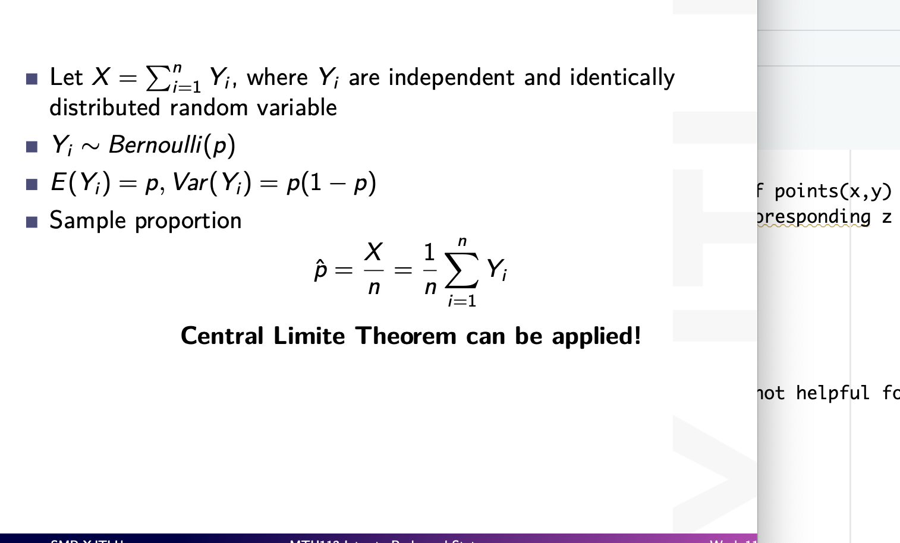

<!DOCTYPE html>
<html xmlns="http://www.w3.org/1999/xhtml" lang="en" xml:lang="en"><head>

<meta charset="utf-8">
<meta name="generator" content="quarto-1.4.555">

<meta name="viewport" content="width=device-width, initial-scale=1.0, user-scalable=yes">


<title>Foundation Math Learning - APH101+ MTH113 Intro to probability and statistics+APH003–exploring world through data</title>
<style>
code{white-space: pre-wrap;}
span.smallcaps{font-variant: small-caps;}
div.columns{display: flex; gap: min(4vw, 1.5em);}
div.column{flex: auto; overflow-x: auto;}
div.hanging-indent{margin-left: 1.5em; text-indent: -1.5em;}
ul.task-list{list-style: none;}
ul.task-list li input[type="checkbox"] {
  width: 0.8em;
  margin: 0 0.8em 0.2em -1em; /* quarto-specific, see https://github.com/quarto-dev/quarto-cli/issues/4556 */ 
  vertical-align: middle;
}
/* CSS for syntax highlighting */
pre > code.sourceCode { white-space: pre; position: relative; }
pre > code.sourceCode > span { line-height: 1.25; }
pre > code.sourceCode > span:empty { height: 1.2em; }
.sourceCode { overflow: visible; }
code.sourceCode > span { color: inherit; text-decoration: inherit; }
div.sourceCode { margin: 1em 0; }
pre.sourceCode { margin: 0; }
@media screen {
div.sourceCode { overflow: auto; }
}
@media print {
pre > code.sourceCode { white-space: pre-wrap; }
pre > code.sourceCode > span { text-indent: -5em; padding-left: 5em; }
}
pre.numberSource code
  { counter-reset: source-line 0; }
pre.numberSource code > span
  { position: relative; left: -4em; counter-increment: source-line; }
pre.numberSource code > span > a:first-child::before
  { content: counter(source-line);
    position: relative; left: -1em; text-align: right; vertical-align: baseline;
    border: none; display: inline-block;
    -webkit-touch-callout: none; -webkit-user-select: none;
    -khtml-user-select: none; -moz-user-select: none;
    -ms-user-select: none; user-select: none;
    padding: 0 4px; width: 4em;
  }
pre.numberSource { margin-left: 3em;  padding-left: 4px; }
div.sourceCode
  {   }
@media screen {
pre > code.sourceCode > span > a:first-child::before { text-decoration: underline; }
}
</style>


<script src="site_libs/quarto-nav/quarto-nav.js"></script>
<script src="site_libs/quarto-nav/headroom.min.js"></script>
<script src="site_libs/clipboard/clipboard.min.js"></script>
<script src="site_libs/quarto-search/autocomplete.umd.js"></script>
<script src="site_libs/quarto-search/fuse.min.js"></script>
<script src="site_libs/quarto-search/quarto-search.js"></script>
<meta name="quarto:offset" content="./">
<script src="site_libs/quarto-html/quarto.js"></script>
<script src="site_libs/quarto-html/popper.min.js"></script>
<script src="site_libs/quarto-html/tippy.umd.min.js"></script>
<script src="site_libs/quarto-html/anchor.min.js"></script>
<link href="site_libs/quarto-html/tippy.css" rel="stylesheet">
<link href="site_libs/quarto-html/quarto-syntax-highlighting.css" rel="stylesheet" id="quarto-text-highlighting-styles">
<script src="site_libs/bootstrap/bootstrap.min.js"></script>
<link href="site_libs/bootstrap/bootstrap-icons.css" rel="stylesheet">
<link href="site_libs/bootstrap/bootstrap.min.css" rel="stylesheet" id="quarto-bootstrap" data-mode="light">
<script id="quarto-search-options" type="application/json">{
  "location": "navbar",
  "copy-button": false,
  "collapse-after": 3,
  "panel-placement": "end",
  "type": "overlay",
  "limit": 50,
  "keyboard-shortcut": [
    "f",
    "/",
    "s"
  ],
  "show-item-context": false,
  "language": {
    "search-no-results-text": "No results",
    "search-matching-documents-text": "matching documents",
    "search-copy-link-title": "Copy link to search",
    "search-hide-matches-text": "Hide additional matches",
    "search-more-match-text": "more match in this document",
    "search-more-matches-text": "more matches in this document",
    "search-clear-button-title": "Clear",
    "search-text-placeholder": "",
    "search-detached-cancel-button-title": "Cancel",
    "search-submit-button-title": "Submit",
    "search-label": "Search"
  }
}</script>

  <script src="https://polyfill.io/v3/polyfill.min.js?features=es6"></script>
  <script src="https://cdn.jsdelivr.net/npm/mathjax@3/es5/tex-chtml-full.js" type="text/javascript"></script>

<script type="text/javascript">
const typesetMath = (el) => {
  if (window.MathJax) {
    // MathJax Typeset
    window.MathJax.typeset([el]);
  } else if (window.katex) {
    // KaTeX Render
    var mathElements = el.getElementsByClassName("math");
    var macros = [];
    for (var i = 0; i < mathElements.length; i++) {
      var texText = mathElements[i].firstChild;
      if (mathElements[i].tagName == "SPAN") {
        window.katex.render(texText.data, mathElements[i], {
          displayMode: mathElements[i].classList.contains('display'),
          throwOnError: false,
          macros: macros,
          fleqn: false
        });
      }
    }
  }
}
window.Quarto = {
  typesetMath
};
</script>

</head>

<body class="nav-fixed">

<div id="quarto-search-results"></div>
  <header id="quarto-header" class="headroom fixed-top">
    <nav class="navbar navbar-expand-lg " data-bs-theme="dark">
      <div class="navbar-container container-fluid">
      <div class="navbar-brand-container mx-auto">
    <a class="navbar-brand" href="./index.html">
    <span class="navbar-title">Foundation Math Learning</span>
    </a>
  </div>
            <div id="quarto-search" class="" title="Search"></div>
          <button class="navbar-toggler" type="button" data-bs-toggle="collapse" data-bs-target="#navbarCollapse" aria-controls="navbarCollapse" aria-expanded="false" aria-label="Toggle navigation" onclick="if (window.quartoToggleHeadroom) { window.quartoToggleHeadroom(); }">
  <span class="navbar-toggler-icon"></span>
</button>
          <div class="collapse navbar-collapse" id="navbarCollapse">
            <ul class="navbar-nav navbar-nav-scroll me-auto">
  <li class="nav-item">
    <a class="nav-link" href="https://yuuuulu.github.io/"> 
<span class="menu-text">yuuuulu</span></a>
  </li>  
  <li class="nav-item">
    <a class="nav-link" href="./index.html"> 
<span class="menu-text">Homepage</span></a>
  </li>  
  <li class="nav-item">
    <a class="nav-link" href="./mth107.html"> 
<span class="menu-text">Advanced Linear Algebra</span></a>
  </li>  
  <li class="nav-item">
    <a class="nav-link" href="./Simple_ODEs.html"> 
<span class="menu-text">ODEs and PDEs with codes</span></a>
  </li>  
  <li class="nav-item">
    <a class="nav-link" href="./mth106.html"> 
<span class="menu-text">ODE, PDE, and Fourier Series</span></a>
  </li>  
  <li class="nav-item">
    <a class="nav-link" href="./Mathematical Analysis 1.html"> 
<span class="menu-text">Analysis 1</span></a>
  </li>  
  <li class="nav-item">
    <a class="nav-link active" href="./mth1113.html" aria-current="page"> 
<span class="menu-text">intro to prob, and stat.</span></a>
  </li>  
  <li class="nav-item">
    <a class="nav-link" href="./Calculus.html"> 
<span class="menu-text">Calculus</span></a>
  </li>  
</ul>
          </div> <!-- /navcollapse -->
          <div class="quarto-navbar-tools">
</div>
      </div> <!-- /container-fluid -->
    </nav>
</header>
<!-- content -->
<div id="quarto-content" class="quarto-container page-columns page-rows-contents page-layout-article page-navbar">
<!-- sidebar -->
<!-- margin-sidebar -->
    <div id="quarto-margin-sidebar" class="sidebar margin-sidebar">
        <nav id="TOC" role="doc-toc" class="toc-active">
    <h2 id="toc-title">On this page</h2>
   
  <ul>
  <li><a href="#margin-of-error" id="toc-margin-of-error" class="nav-link active" data-scroll-target="#margin-of-error">margin of error</a></li>
  <li><a href="#hypothesis-testing" id="toc-hypothesis-testing" class="nav-link" data-scroll-target="#hypothesis-testing">Hypothesis testing</a></li>
  <li><a href="#chi" id="toc-chi" class="nav-link" data-scroll-target="#chi">Chi</a></li>
  <li><a href="#why-n-1-in-sampling-variance" id="toc-why-n-1-in-sampling-variance" class="nav-link" data-scroll-target="#why-n-1-in-sampling-variance">Why n-1 in sampling variance</a></li>
  <li><a href="#simple-random-samlple" id="toc-simple-random-samlple" class="nav-link" data-scroll-target="#simple-random-samlple">Simple random samlple</a></li>
  <li><a href="#sample-space-and-probability-measure" id="toc-sample-space-and-probability-measure" class="nav-link" data-scroll-target="#sample-space-and-probability-measure">Sample Space and Probability Measure</a></li>
  <li><a href="#interpret-the-probability" id="toc-interpret-the-probability" class="nav-link" data-scroll-target="#interpret-the-probability">interpret the probability</a></li>
  <li><a href="#moment-generating-functions" id="toc-moment-generating-functions" class="nav-link" data-scroll-target="#moment-generating-functions">Moment Generating Functions</a>
  <ul class="collapse">
  <li><a href="#case-1" id="toc-case-1" class="nav-link" data-scroll-target="#case-1">case 1</a></li>
  <li><a href="#case-2" id="toc-case-2" class="nav-link" data-scroll-target="#case-2">case 2</a>
  <ul class="collapse">
  <li><a href="#gamma-disteibution" id="toc-gamma-disteibution" class="nav-link" data-scroll-target="#gamma-disteibution">Gamma disteibution</a></li>
  </ul></li>
  <li><a href="#why-mgf-is-useful-to-determine-if-two-random-variables-have-the-identical-cdf-to-prove-the-addition-property-of-distributions" id="toc-why-mgf-is-useful-to-determine-if-two-random-variables-have-the-identical-cdf-to-prove-the-addition-property-of-distributions" class="nav-link" data-scroll-target="#why-mgf-is-useful-to-determine-if-two-random-variables-have-the-identical-cdf-to-prove-the-addition-property-of-distributions">why MGF is useful? – to determine if two random variables have the identical CDF / to prove the addition property of distributions</a></li>
  </ul></li>
  <li><a href="#normal-chi-squared-distribution" id="toc-normal-chi-squared-distribution" class="nav-link" data-scroll-target="#normal-chi-squared-distribution">Normal –&gt; Chi-squared distribution</a></li>
  <li><a href="#preface" id="toc-preface" class="nav-link" data-scroll-target="#preface">Preface</a></li>
  <li><a href="#把公式推导单独放一栏后" id="toc-把公式推导单独放一栏后" class="nav-link" data-scroll-target="#把公式推导单独放一栏后">把公式推导单独放一栏（后）</a></li>
  <li><a href="#error" id="toc-error" class="nav-link" data-scroll-target="#error">error?</a></li>
  <li><a href="#my-reading-during-this-course" id="toc-my-reading-during-this-course" class="nav-link" data-scroll-target="#my-reading-during-this-course">My reading during this course：</a>
  <ul class="collapse">
  <li><a href="#十堂极简概率课-中信出版-diaconis" id="toc-十堂极简概率课-中信出版-diaconis" class="nav-link" data-scroll-target="#十堂极简概率课-中信出版-diaconis">十堂极简概率课 中信出版 diaconis</a></li>
  <li><a href="#心理统计" id="toc-心理统计" class="nav-link" data-scroll-target="#心理统计">心理统计</a></li>
  <li><a href="#the-lady-tasting-tea" id="toc-the-lady-tasting-tea" class="nav-link" data-scroll-target="#the-lady-tasting-tea">The lady tasting tea</a></li>
  <li><a href="#概率论与数理统计第三版-峁诗松等老师编著" id="toc-概率论与数理统计第三版-峁诗松等老师编著" class="nav-link" data-scroll-target="#概率论与数理统计第三版-峁诗松等老师编著">概率论与数理统计（第三版） 峁诗松等老师编著</a></li>
  <li><a href="#probability." id="toc-probability." class="nav-link" data-scroll-target="#probability.">Probability….</a></li>
  </ul></li>
  <li><a href="#bivariate-data" id="toc-bivariate-data" class="nav-link" data-scroll-target="#bivariate-data">bivariate data</a></li>
  <li><a href="#linear-regression" id="toc-linear-regression" class="nav-link" data-scroll-target="#linear-regression">linear regression</a>
  <ul class="collapse">
  <li><a href="#background" id="toc-background" class="nav-link" data-scroll-target="#background">background</a></li>
  <li><a href="#it-is-not-stable-to-predict-the-data-outside-our-data-sample" id="toc-it-is-not-stable-to-predict-the-data-outside-our-data-sample" class="nav-link" data-scroll-target="#it-is-not-stable-to-predict-the-data-outside-our-data-sample">it is not stable to predict the data outside our data sample’</a></li>
  <li><a href="#residual-plot-should-have-no-pattern" id="toc-residual-plot-should-have-no-pattern" class="nav-link" data-scroll-target="#residual-plot-should-have-no-pattern">Residual plot should have no pattern</a></li>
  </ul></li>
  <li><a href="#skew" id="toc-skew" class="nav-link" data-scroll-target="#skew">skew</a></li>
  <li><a href="#outlier-eg-of-normal-distribution" id="toc-outlier-eg-of-normal-distribution" class="nav-link" data-scroll-target="#outlier-eg-of-normal-distribution">outlier (eg of normal distribution)</a></li>
  <li><a href="#quartile" id="toc-quartile" class="nav-link" data-scroll-target="#quartile">quartile</a></li>
  <li><a href="#modified-boxplot" id="toc-modified-boxplot" class="nav-link" data-scroll-target="#modified-boxplot">modified boxplot</a></li>
  <li><a href="#measures-of-relative-standing" id="toc-measures-of-relative-standing" class="nav-link" data-scroll-target="#measures-of-relative-standing">Measures of relative standing</a>
  <ul class="collapse">
  <li><a href="#z-scores" id="toc-z-scores" class="nav-link" data-scroll-target="#z-scores">z Scores</a></li>
  </ul></li>
  <li><a href="#tutorial" id="toc-tutorial" class="nav-link" data-scroll-target="#tutorial">tutorial</a></li>
  <li><a href="#the-role-of-statistics-and-the-data-analysis-process" id="toc-the-role-of-statistics-and-the-data-analysis-process" class="nav-link" data-scroll-target="#the-role-of-statistics-and-the-data-analysis-process">The role of statistics and the Data Analysis Process</a>
  <ul class="collapse">
  <li><a href="#intro" id="toc-intro" class="nav-link" data-scroll-target="#intro">Intro</a></li>
  <li><a href="#populations-and-samples" id="toc-populations-and-samples" class="nav-link" data-scroll-target="#populations-and-samples">populations and samples</a>
  <ul class="collapse">
  <li><a href="#descriptive-stat" id="toc-descriptive-stat" class="nav-link" data-scroll-target="#descriptive-stat">descriptive stat</a></li>
  <li><a href="#inferential-stat" id="toc-inferential-stat" class="nav-link" data-scroll-target="#inferential-stat">inferential stat</a></li>
  </ul></li>
  <li><a href="#types-of-data" id="toc-types-of-data" class="nav-link" data-scroll-target="#types-of-data">Types of data</a>
  <ul class="collapse">
  <li><a href="#uni-data-set-and-bivariate-and-multivariate" id="toc-uni-data-set-and-bivariate-and-multivariate" class="nav-link" data-scroll-target="#uni-data-set-and-bivariate-and-multivariate">uni data set and bivariate and multivariate</a></li>
  <li><a href="#categorical-and-numericaldiscrete-and-continuous-with-plot-using-excel-data-analysis-or-rstudio-plot-ggplot2" id="toc-categorical-and-numericaldiscrete-and-continuous-with-plot-using-excel-data-analysis-or-rstudio-plot-ggplot2" class="nav-link" data-scroll-target="#categorical-and-numericaldiscrete-and-continuous-with-plot-using-excel-data-analysis-or-rstudio-plot-ggplot2">categorical and numerical(discrete and continuous) with plot using excel (data analysis) or rstudio plot (ggplot2)</a></li>
  </ul></li>
  <li><a href="#collect-data-sensibly" id="toc-collect-data-sensibly" class="nav-link" data-scroll-target="#collect-data-sensibly">collect data sensibly</a></li>
  </ul></li>
  <li><a href="#chapter-2" id="toc-chapter-2" class="nav-link" data-scroll-target="#chapter-2">chapter 2</a>
  <ul class="collapse">
  <li><a href="#two-types-of-studies-observational-studies-and-experiments." id="toc-two-types-of-studies-observational-studies-and-experiments." class="nav-link" data-scroll-target="#two-types-of-studies-observational-studies-and-experiments.">Two types of studies: Observational studies and Experiments.</a>
  <ul class="collapse">
  <li><a href="#observational" id="toc-observational" class="nav-link" data-scroll-target="#observational">Observational</a></li>
  <li><a href="#experiments" id="toc-experiments" class="nav-link" data-scroll-target="#experiments">Experiments</a></li>
  <li><a href="#comparison" id="toc-comparison" class="nav-link" data-scroll-target="#comparison">comparison</a></li>
  <li><a href="#confounding-vars" id="toc-confounding-vars" class="nav-link" data-scroll-target="#confounding-vars">confounding vars</a></li>
  </ul></li>
  <li><a href="#variable" id="toc-variable" class="nav-link" data-scroll-target="#variable">variable</a>
  <ul class="collapse">
  <li><a href="#response-variabley" id="toc-response-variabley" class="nav-link" data-scroll-target="#response-variabley">response variable–y</a></li>
  <li><a href="#explanotory-variablex" id="toc-explanotory-variablex" class="nav-link" data-scroll-target="#explanotory-variablex">explanotory variable–x</a></li>
  <li><a href="#experiments-and-obeservational-study" id="toc-experiments-and-obeservational-study" class="nav-link" data-scroll-target="#experiments-and-obeservational-study">experiments and obeservational study</a></li>
  <li><a href="#bias" id="toc-bias" class="nav-link" data-scroll-target="#bias">bias</a></li>
  <li><a href="#random-sampling" id="toc-random-sampling" class="nav-link" data-scroll-target="#random-sampling">random sampling</a></li>
  <li><a href="#stratified-and-cluster" id="toc-stratified-and-cluster" class="nav-link" data-scroll-target="#stratified-and-cluster">stratified and cluster</a></li>
  <li><a href="#systematic-sampling" id="toc-systematic-sampling" class="nav-link" data-scroll-target="#systematic-sampling">systematic sampling</a></li>
  </ul></li>
  </ul></li>
  <li><a href="#random-variable" id="toc-random-variable" class="nav-link" data-scroll-target="#random-variable">Random Variable</a>
  <ul class="collapse">
  <li><a href="#random-variable-r.v." id="toc-random-variable-r.v." class="nav-link" data-scroll-target="#random-variable-r.v.">Random Variable (R.V.)</a>
  <ul class="collapse">
  <li><a href="#eg" id="toc-eg" class="nav-link" data-scroll-target="#eg">eg</a></li>
  </ul></li>
  <li><a href="#sample-space-of-multivariables" id="toc-sample-space-of-multivariables" class="nav-link" data-scroll-target="#sample-space-of-multivariables">sample space of multivariables</a></li>
  <li><a href="#probability-mass-function-and-cumulative-distribution-function-for-discrete-random-variables" id="toc-probability-mass-function-and-cumulative-distribution-function-for-discrete-random-variables" class="nav-link" data-scroll-target="#probability-mass-function-and-cumulative-distribution-function-for-discrete-random-variables">Probability Mass Function and Cumulative Distribution Function for Discrete Random Variables</a></li>
  <li><a href="#expectation-and-variance-for-discrete-random-variables" id="toc-expectation-and-variance-for-discrete-random-variables" class="nav-link" data-scroll-target="#expectation-and-variance-for-discrete-random-variables">Expectation and Variance for Discrete Random Variables</a></li>
  </ul></li>
  <li><a href="#joint-distribution-of-x-and-y" id="toc-joint-distribution-of-x-and-y" class="nav-link" data-scroll-target="#joint-distribution-of-x-and-y">joint distribution of X and Y</a></li>
  <li><a href="#marginal-probability-mass-function" id="toc-marginal-probability-mass-function" class="nav-link" data-scroll-target="#marginal-probability-mass-function">Marginal Probability Mass Function</a></li>
  <li><a href="#functions-of-multiple-random-variables" id="toc-functions-of-multiple-random-variables" class="nav-link" data-scroll-target="#functions-of-multiple-random-variables">Functions of multiple random variables</a></li>
  <li><a href="#independence" id="toc-independence" class="nav-link" data-scroll-target="#independence">independence</a>
  <ul class="collapse">
  <li><a href="#independence-expectationsmean-and-variance" id="toc-independence-expectationsmean-and-variance" class="nav-link" data-scroll-target="#independence-expectationsmean-and-variance">independence, expectations(mean) and variance</a></li>
  </ul></li>
  <li><a href="#continuous-random-variables" id="toc-continuous-random-variables" class="nav-link" data-scroll-target="#continuous-random-variables">Continuous Random Variables</a>
  <ul class="collapse">
  <li><a href="#definition.-probability-density-function-pdf" id="toc-definition.-probability-density-function-pdf" class="nav-link" data-scroll-target="#definition.-probability-density-function-pdf">Definition. Probability Density Function (pdf)</a></li>
  <li><a href="#discrete-and-continuous" id="toc-discrete-and-continuous" class="nav-link" data-scroll-target="#discrete-and-continuous">discrete and continuous</a></li>
  </ul></li>
  <li><a href="#covariance" id="toc-covariance" class="nav-link" data-scroll-target="#covariance">Covariance</a>
  <ul class="collapse">
  <li><a href="#wait-for-reviewing.." id="toc-wait-for-reviewing.." class="nav-link" data-scroll-target="#wait-for-reviewing..">wait for reviewing…..</a></li>
  </ul></li>
  <li><a href="#descrete-distributions" id="toc-descrete-distributions" class="nav-link" data-scroll-target="#descrete-distributions">Descrete distributions</a>
  <ul class="collapse">
  <li><a href="#bernoulli-is-composed-by-binomial" id="toc-bernoulli-is-composed-by-binomial" class="nav-link" data-scroll-target="#bernoulli-is-composed-by-binomial">Bernoulli is composed by binomial</a></li>
  <li><a href="#hypergeometric-distribution-could-be-approximated-by-binomial-when-samples-are-large" id="toc-hypergeometric-distribution-could-be-approximated-by-binomial-when-samples-are-large" class="nav-link" data-scroll-target="#hypergeometric-distribution-could-be-approximated-by-binomial-when-samples-are-large">Hypergeometric distribution could be approximated by Binomial when samples are large</a></li>
  <li><a href="#poisson-distribution-as-the-limit-of-binomial-distribution-when-the-number-of-trials-is-large-and-the-probabiliy-of-success-of-each-trial-is-inverse-proportional-to-the-number-of-trials" id="toc-poisson-distribution-as-the-limit-of-binomial-distribution-when-the-number-of-trials-is-large-and-the-probabiliy-of-success-of-each-trial-is-inverse-proportional-to-the-number-of-trials" class="nav-link" data-scroll-target="#poisson-distribution-as-the-limit-of-binomial-distribution-when-the-number-of-trials-is-large-and-the-probabiliy-of-success-of-each-trial-is-inverse-proportional-to-the-number-of-trials">Poisson distribution as the limit of Binomial distribution when the number of trials is large and the probabiliy of success of each trial is inverse-proportional to the number of trials</a>
  <ul class="collapse">
  <li><a href="#the-occurrences-must-be-uniformly-distributed-over-the-interval-being-used" id="toc-the-occurrences-must-be-uniformly-distributed-over-the-interval-being-used" class="nav-link" data-scroll-target="#the-occurrences-must-be-uniformly-distributed-over-the-interval-being-used">???The occurrences must be uniformly distributed over the interval being used</a></li>
  </ul></li>
  <li><a href="#geometric-distribution" id="toc-geometric-distribution" class="nav-link" data-scroll-target="#geometric-distribution">Geometric distribution</a>
  <ul class="collapse">
  <li><a href="#the-irrelevance-of-past-events-to-the-probability-of-future-independent-events" id="toc-the-irrelevance-of-past-events-to-the-probability-of-future-independent-events" class="nav-link" data-scroll-target="#the-irrelevance-of-past-events-to-the-probability-of-future-independent-events">The irrelevance of past events to the probability of future independent events</a></li>
  </ul></li>
  <li><a href="#addition" id="toc-addition" class="nav-link" data-scroll-target="#addition">Addition</a></li>
  </ul></li>
  <li><a href="#normal-distribution" id="toc-normal-distribution" class="nav-link" data-scroll-target="#normal-distribution">Normal distribution</a>
  <ul class="collapse">
  <li><a href="#interpretation" id="toc-interpretation" class="nav-link" data-scroll-target="#interpretation">interpretation:</a></li>
  <li><a href="#sampling-distributions-and-estimators" id="toc-sampling-distributions-and-estimators" class="nav-link" data-scroll-target="#sampling-distributions-and-estimators">Sampling distributions and Estimators</a></li>
  <li><a href="#unbiased-estimators-and-biased-estimators" id="toc-unbiased-estimators-and-biased-estimators" class="nav-link" data-scroll-target="#unbiased-estimators-and-biased-estimators">Unbiased estimators and biased estimators</a></li>
  </ul></li>
  <li><a href="#the-central-limit-thm" id="toc-the-central-limit-thm" class="nav-link" data-scroll-target="#the-central-limit-thm">The Central Limit Thm</a>
  <ul class="collapse">
  <li><a href="#optional-correction-for-a-finite-population" id="toc-optional-correction-for-a-finite-population" class="nav-link" data-scroll-target="#optional-correction-for-a-finite-population">Optional: Correction for a finite population</a></li>
  <li><a href="#using-the-normal-distribution-as-an-approximation-to-the-binomial-distribution" id="toc-using-the-normal-distribution-as-an-approximation-to-the-binomial-distribution" class="nav-link" data-scroll-target="#using-the-normal-distribution-as-an-approximation-to-the-binomial-distribution">Using the Normal distribution as an approximation to the binomial distribution</a></li>
  <li><a href="#to-hypothesis-testing" id="toc-to-hypothesis-testing" class="nav-link" data-scroll-target="#to-hypothesis-testing">to hypothesis testing</a></li>
  <li><a href="#normal-distribution-1" id="toc-normal-distribution-1" class="nav-link" data-scroll-target="#normal-distribution-1">Normal distribution</a>
  <ul class="collapse">
  <li><a href="#assessing-normality" id="toc-assessing-normality" class="nav-link" data-scroll-target="#assessing-normality">Assessing Normality</a></li>
  </ul></li>
  <li><a href="#inferences-from-2-samples-introduces-the-differences-between-two-populaton-means-using-matched-pairs-but-correlaition-and-regression-analyze-the-association-between-the-2-variables-and-if-such-an-association-exists-we-wnat-to-describe-it-with-an-equation-that-can-be-used-for-predictions" id="toc-inferences-from-2-samples-introduces-the-differences-between-two-populaton-means-using-matched-pairs-but-correlaition-and-regression-analyze-the-association-between-the-2-variables-and-if-such-an-association-exists-we-wnat-to-describe-it-with-an-equation-that-can-be-used-for-predictions" class="nav-link" data-scroll-target="#inferences-from-2-samples-introduces-the-differences-between-two-populaton-means-using-matched-pairs-but-correlaition-and-regression-analyze-the-association-between-the-2-variables-and-if-such-an-association-exists-we-wnat-to-describe-it-with-an-equation-that-can-be-used-for-predictions">inferences from 2 samples introduces the differences between two populaton means using matched pairs but correlaition and regression analyze the association between the 2 variables and if such an association exists we wnat to describe it with an equation that can be used for predictions</a></li>
  </ul></li>
  <li><a href="#point-estimation-and-confident-interval" id="toc-point-estimation-and-confident-interval" class="nav-link" data-scroll-target="#point-estimation-and-confident-interval">point estimation and confident interval</a></li>
  </ul>
</nav>
    </div>
<!-- main -->
<main class="content" id="quarto-document-content">

<header id="title-block-header" class="quarto-title-block default">
<div class="quarto-title">
<h1 class="title">APH101+ MTH113 Intro to probability and statistics+APH003–exploring world through data</h1>
</div>


<div class="quarto-title-meta">

    
  
    
  </div>
  


</header>


<div class="sourceCode" id="cb1"><pre class="sourceCode r code-with-copy"><code class="sourceCode r"><span id="cb1-1"><a href="#cb1-1" aria-hidden="true" tabindex="-1"></a>dplyr<span class="sc">::</span><span class="fu">filter</span>()</span></code><button title="Copy to Clipboard" class="code-copy-button"><i class="bi"></i></button></pre></div>
<section id="margin-of-error" class="level1">
<h1>margin of error</h1>
<p>For a given level of confidence c, The greatest possible distance between the point estimate and the value of the parameter it is estimating.</p>
<p>Sometimes called the maximum error of estimate or error tolerance.</p>
</section>
<section id="hypothesis-testing" class="level1">
<h1>Hypothesis testing</h1>
<ul>
<li><p>opening: does these data (gained sleep hour) means the low dose of drugs improves the length of people’s sleep?</p>
<ul>
<li><p>Suppose <span class="math inline">\(X_1,...X_n \sim^{iid}\)</span> N<span class="math inline">\((\mu,\sigma^2)\)</span> with both of 2 parameters unknown</p>
<ul>
<li>let <span class="math inline">\(t_{obs}=t(x)=\frac{\bar x - \mu _0}{s/\sqrt n}\)</span></li>
</ul></li>
</ul></li>
</ul>
</section>
<section id="chi" class="level1">
<h1>Chi</h1>
<ul>
<li><p>Standard normal</p></li>
<li><p>the square sum of standard normal (MGF same)</p></li>
<li><p>（1-n-1/N-1） times Var(p)</p></li>
</ul>
</section>
<section id="why-n-1-in-sampling-variance" class="level1">
<h1>Why n-1 in sampling variance</h1>
<p>？</p>
<ul>
<li><p>degree of freedom</p></li>
<li><p>ubiased estimation. (是指在已知sample时，这个无偏估计是所有估计中的平均值，这样我们才能称其为“无偏”。)</p></li>
</ul>
<p></p>
<ul>
<li>sampling proportion is unbiased</li>
</ul>
<p>E(<span class="math inline">\(\hat P\)</span>) = E(X/n)=npn (binomial distribution) =p Var—also 如果E满足 variance 不满足呢</p>
</section>
<section id="simple-random-samlple" class="level1">
<h1>Simple random samlple</h1>
<p>We know the total population but do not know p of our interests.</p>
<p>Based on hypergeometric probability calculation we can estimate p as <span class="math inline">\(\hat p = \text{intrests}/N= X_1+...+X_N/N\)</span> where <span class="math inline">\(X_i\)</span>~ Bernoulli(p) and <span class="math inline">\(\hat p\)</span> is a random variable. Therefore, <span class="math inline">\(E[\hat p] = p\)</span> (E<span class="math inline">\(X_i\)</span>=p based on Bernouli distribution).</p>
<ul>
<li>If <span class="math inline">\(X_i\)</span> are independent then E(<span class="math inline">\(X_1+X_2\)</span>) = 2E(<span class="math inline">\(X_1\)</span>)</li>
</ul>
<p>Here, eg. E<span class="math inline">\(\hat p^2\)</span>= 1/n E<span class="math inline">\(X_1^2\)</span>+n-1/nE<span class="math inline">\(X_1 X_2\)</span></p>
<p>Since <span class="math inline">\(X_1=1\)</span> <span class="math inline">\(X_1^2=X_1\)</span></p>
<p>and E<span class="math inline">\(X_1 X_2\)</span> = P<span class="math inline">\(X_1, X_2\)</span></p>
<p>Finally, we can look at the distribution of <span class="math inline">\(\hat p\)</span>, suppose we know the true p is 0.54, we can use <strong>simulation</strong> to randomly sample <span class="math inline">\(X_1,...X_n\)</span> from Np people who support 1 and ……who support</p>
<ul>
<li>God’s perspective</li>
</ul>
<div class="cell">
<div class="sourceCode cell-code" id="cb2"><pre class="sourceCode r code-with-copy"><code class="sourceCode r"><span id="cb2-1"><a href="#cb2-1" aria-hidden="true" tabindex="-1"></a><span class="fu">library</span>(ggplot2)</span>
<span id="cb2-2"><a href="#cb2-2" aria-hidden="true" tabindex="-1"></a></span>
<span id="cb2-3"><a href="#cb2-3" aria-hidden="true" tabindex="-1"></a><span class="fu">set.seed</span>(<span class="dv">111</span>)</span>
<span id="cb2-4"><a href="#cb2-4" aria-hidden="true" tabindex="-1"></a></span>
<span id="cb2-5"><a href="#cb2-5" aria-hidden="true" tabindex="-1"></a>population_size <span class="ot">&lt;-</span> <span class="dv">12141897</span></span>
<span id="cb2-6"><a href="#cb2-6" aria-hidden="true" tabindex="-1"></a></span>
<span id="cb2-7"><a href="#cb2-7" aria-hidden="true" tabindex="-1"></a>p <span class="ot">&lt;-</span> <span class="fl">0.54</span></span>
<span id="cb2-8"><a href="#cb2-8" aria-hidden="true" tabindex="-1"></a></span>
<span id="cb2-9"><a href="#cb2-9" aria-hidden="true" tabindex="-1"></a>num_simulations <span class="ot">&lt;-</span> <span class="dv">500</span></span>
<span id="cb2-10"><a href="#cb2-10" aria-hidden="true" tabindex="-1"></a></span>
<span id="cb2-11"><a href="#cb2-11" aria-hidden="true" tabindex="-1"></a>sample_size <span class="ot">&lt;-</span> <span class="dv">1000</span></span>
<span id="cb2-12"><a href="#cb2-12" aria-hidden="true" tabindex="-1"></a></span>
<span id="cb2-13"><a href="#cb2-13" aria-hidden="true" tabindex="-1"></a><span class="fu">rep</span>()</span></code><button title="Copy to Clipboard" class="code-copy-button"><i class="bi"></i></button></pre></div>
<div class="cell-output cell-output-stdout">
<pre><code>NULL</code></pre>
</div>
<div class="sourceCode cell-code" id="cb4"><pre class="sourceCode r code-with-copy"><code class="sourceCode r"><span id="cb4-1"><a href="#cb4-1" aria-hidden="true" tabindex="-1"></a>p_hat_values <span class="ot">&lt;-</span> <span class="fu">replicate</span>(num_simulations, {</span>
<span id="cb4-2"><a href="#cb4-2" aria-hidden="true" tabindex="-1"></a>  <span class="co"># Simulate sampling from the population</span></span>
<span id="cb4-3"><a href="#cb4-3" aria-hidden="true" tabindex="-1"></a>  sample <span class="ot">&lt;-</span> <span class="fu">sample</span>(<span class="fu">c</span>(<span class="fu">rep</span>(<span class="dv">1</span>,population_size <span class="sc">*</span> p), <span class="fu">rep</span>(<span class="dv">0</span>,population_size<span class="sc">*</span>(<span class="dv">1</span><span class="sc">-</span>p))), sample_size, <span class="at">replace =</span><span class="cn">FALSE</span>) <span class="co"># replicate(num_simulations, {...})：这个函数会重复执行大括号中的代码num_simulations次，并将每次的结果存储在一个向量中； rep创建一个包含population_size * p个1和population_size * (1-p)个0的向量，模拟总体。</span></span>
<span id="cb4-4"><a href="#cb4-4" aria-hidden="true" tabindex="-1"></a><span class="fu">mean</span>(sample) <span class="co">#calculate the p_hat for each sample</span></span>
<span id="cb4-5"><a href="#cb4-5" aria-hidden="true" tabindex="-1"></a>})</span>
<span id="cb4-6"><a href="#cb4-6" aria-hidden="true" tabindex="-1"></a></span>
<span id="cb4-7"><a href="#cb4-7" aria-hidden="true" tabindex="-1"></a></span>
<span id="cb4-8"><a href="#cb4-8" aria-hidden="true" tabindex="-1"></a>  </span>
<span id="cb4-9"><a href="#cb4-9" aria-hidden="true" tabindex="-1"></a>histogram <span class="ot">&lt;-</span> <span class="fu">ggplot</span>(<span class="fu">data.frame</span>(<span class="at">p =</span> p_hat_values), <span class="fu">aes</span>(<span class="at">x=</span>p))<span class="sc">+</span></span>
<span id="cb4-10"><a href="#cb4-10" aria-hidden="true" tabindex="-1"></a>  <span class="fu">geom_histogram</span>(<span class="at">binwidth =</span> <span class="fl">0.01</span>, <span class="at">fill =</span><span class="st">"blue"</span>, <span class="at">color =</span> <span class="st">"black"</span>)<span class="sc">+</span></span>
<span id="cb4-11"><a href="#cb4-11" aria-hidden="true" tabindex="-1"></a>  <span class="fu">labs</span>(<span class="at">title =</span><span class="st">" "</span>,</span>
<span id="cb4-12"><a href="#cb4-12" aria-hidden="true" tabindex="-1"></a>       <span class="at">x =</span> <span class="st">"p_hat"</span>,</span>
<span id="cb4-13"><a href="#cb4-13" aria-hidden="true" tabindex="-1"></a>       <span class="at">y=</span> <span class="st">"Frequency"</span>)<span class="sc">+</span></span>
<span id="cb4-14"><a href="#cb4-14" aria-hidden="true" tabindex="-1"></a>  <span class="fu">theme_minimal</span>()</span>
<span id="cb4-15"><a href="#cb4-15" aria-hidden="true" tabindex="-1"></a></span>
<span id="cb4-16"><a href="#cb4-16" aria-hidden="true" tabindex="-1"></a><span class="fu">print</span>(histogram)</span></code><button title="Copy to Clipboard" class="code-copy-button"><i class="bi"></i></button></pre></div>
<div class="cell-output-display">
<div>
<figure class="figure">
<p></p>
</figure>
</div>
</div>
</div>
<p>doing this 500 times,</p>
<p>based on the central limit theory</p>
<p>Statistical inference and Probability distribution</p>
<ul>
<li><p>estimation</p></li>
<li><p>condifidence intervals</p></li>
<li><p>hypothesis testing</p></li>
</ul>
</section>
<section id="sample-space-and-probability-measure" class="level1">
<h1>Sample Space and Probability Measure</h1>
<p><span class="math inline">\(\sigma\)</span> algebra <span class="math inline">\(F\)</span> is a collection of satisfying :</p>
<p>full and null set</p>
<p>completerment</p>
<p>countably union</p>
<p>measurble we can find a function that takes the elements of F and output a real number</p>
<p>A probability measure is a mapping P:F–&gt; R satisfying the following 3 axioms:</p>
<p>countably for mutually exclusive events <span class="math inline">\(A_1, A_2,...\in F\)</span></p>
</section>
<section id="interpret-the-probability" class="level1">
<h1>interpret the probability</h1>
<ul>
<li><p>frequentist view</p></li>
<li><p>Bayesian view</p></li>
</ul>
<p>Borel set is a combination of open set in some spaces</p>
<div class="sourceCode" id="cb5"><pre class="sourceCode r code-with-copy"><code class="sourceCode r"><span id="cb5-1"><a href="#cb5-1" aria-hidden="true" tabindex="-1"></a><span class="fu">library</span>(ggplot2)</span>
<span id="cb5-2"><a href="#cb5-2" aria-hidden="true" tabindex="-1"></a><span class="fu">library</span>(dplyr)</span>
<span id="cb5-3"><a href="#cb5-3" aria-hidden="true" tabindex="-1"></a><span class="fu">library</span>(readr)</span>
<span id="cb5-4"><a href="#cb5-4" aria-hidden="true" tabindex="-1"></a><span class="fu">library</span>(magrittr)</span>
<span id="cb5-5"><a href="#cb5-5" aria-hidden="true" tabindex="-1"></a></span>
<span id="cb5-6"><a href="#cb5-6" aria-hidden="true" tabindex="-1"></a>circ <span class="ot">&lt;-</span> <span class="fu">read_csv</span>(<span class="st">"Charm_City_Circulator_Ridership.csv"</span>)</span>
<span id="cb5-7"><a href="#cb5-7" aria-hidden="true" tabindex="-1"></a><span class="do">## take just average ridership per day</span></span>
<span id="cb5-8"><a href="#cb5-8" aria-hidden="true" tabindex="-1"></a>avg <span class="ot">=</span> circ <span class="sc">%&gt;%</span> </span>
<span id="cb5-9"><a href="#cb5-9" aria-hidden="true" tabindex="-1"></a>  <span class="fu">filter</span>(type <span class="sc">==</span> <span class="st">"Average"</span>)</span>
<span id="cb5-10"><a href="#cb5-10" aria-hidden="true" tabindex="-1"></a><span class="co"># keep non-missing data</span></span>
<span id="cb5-11"><a href="#cb5-11" aria-hidden="true" tabindex="-1"></a>avg <span class="ot">=</span> avg <span class="sc">%&gt;%</span> </span>
<span id="cb5-12"><a href="#cb5-12" aria-hidden="true" tabindex="-1"></a>  <span class="fu">filter</span>(<span class="sc">!</span><span class="fu">is.na</span>(number))</span></code><button title="Copy to Clipboard" class="code-copy-button"><i class="bi"></i></button></pre></div>
</section>
<section id="moment-generating-functions" class="level1">
<h1>Moment Generating Functions</h1>
<p><span class="math inline">\(M_x (t)=E(e^{tx})\)</span></p>
<section id="case-1" class="level2">
<h2 class="anchored" data-anchor-id="case-1">case 1</h2>
<p><span class="math inline">\(M_x\)</span> may not exist. When it exists in a neighborhood of 0, using talor</p>
<p><span class="math display">\[e^{tx}=1+tX+(tX)^2/2+...\]</span></p>
<p><span class="math display">\[M_x(t)=1+t\mu+t^2 \mu/2+...\]</span></p>
<p><span class="math inline">\(\mu_j = E(X^i)\)</span> is the j-th moment of X. Therefore,</p>
<p><span class="math display">\[E(X^i)=M^{(j)}(0)\]</span></p>
<p>eg. Then we could also get the variance by take the 2nd order derivatives</p>
</section>
<section id="case-2" class="level2">
<h2 class="anchored" data-anchor-id="case-2">case 2</h2>
<p><span class="math inline">\(\int\)</span></p>
<p>eg. normal</p>
<ul>
<li>X~N(0,1)</li>
</ul>
<p>idea: try to write an integral of a certain distribution’s pdf and we get the result of this integral as 1. here, we get the pdf of the N(t,1) and finally we get <span class="math inline">\(e^{t^2/2}\)</span></p>
<ul>
<li>X~N(<span class="math inline">\(\mu, \sigma^2\)</span>)</li>
</ul>
<p>Then X=<span class="math inline">\(\mu+\sigma Z\)</span> where Z~N(0,1)</p>
<p><span class="math display">\[M_x(t)=E[e^{tx}]=e^{\mu t} E[e^{\sigma t Z}]=e^{\mu t} M_Z(\sigma t)=e^{\mu t +\sigma^2 t^2/2}\]</span></p>
<section id="gamma-disteibution" class="level3">
<h3 class="anchored" data-anchor-id="gamma-disteibution">Gamma disteibution</h3>
<p>the family of gamma distributions generalizes the family of exponential distributions. The gamma distribution with shape r and rate <span class="math inline">\(\lambda\)</span></p>
<section id="addition-rule" class="level4">
<h4 class="anchored" data-anchor-id="addition-rule">addition rule</h4>
<p>r +</p>
<p><span class="math inline">\(\lambda\)</span> stays</p>
</section>
</section>
</section>
<section id="why-mgf-is-useful-to-determine-if-two-random-variables-have-the-identical-cdf-to-prove-the-addition-property-of-distributions" class="level2">
<h2 class="anchored" data-anchor-id="why-mgf-is-useful-to-determine-if-two-random-variables-have-the-identical-cdf-to-prove-the-addition-property-of-distributions">why MGF is useful? – to determine if two random variables have the identical CDF / to prove the addition property of distributions</h2>
<p><strong>MGF</strong> includes all characteristics of a distribution, from whom we could get pdf, cdf, expectation, variance</p>
<ul>
<li>Thm If X and Y are random variables with the same MGF, which is finite on [-t, t ] for some t &gt;0 then X and Y have the same distribution</li>
</ul>
<p>A gamma distribution with shape r =1 is an exponential distribution</p>
<p>A more general function than MGF is the characteristic function.</p>
<p><span class="math inline">\(\phi_X (t) = E(e^{itX})\)</span></p>
</section>
</section>
<section id="normal-chi-squared-distribution" class="level1">
<h1>Normal –&gt; Chi-squared distribution</h1>
<p>MGF</p>
<p>the MGF of the Gamma(1/2, 1/2) distribution is the chi-squared</p>
<p>standard normal random variables’ sum of their each own squers follow a <span class="math inline">\(\chi^2\)</span> distribution</p>
<p>the addition rule lies on the sum of the dgree of freedom</p>
<p><span class="math inline">\((n-1)S^2/\sigma^2\)</span></p>
<p>consider</p>
</section>
<section id="preface" class="level1">
<h1>Preface</h1>
<p>The first section here is the knowledge that attracts most of my interests on this module, followed by the lecture notes I tapped when I am on the journey of this module.</p>
<ul>
<li>Motivation</li>
</ul>
<p>The history of the development of statistics has helped me gain a deeper understanding of this fascinating and practical field of knowledge. Each advancement represents a leap from specific facts to broader, generalized conclusions. What truly captivates me is the remarkable alignment between natural phenomena and statistical principles; there always seems to be a coincidence where reality and theory intersect.</p>
<p>Initially, I only grasped the surface of this knowledge. Then, as I delved deeper, I began to understand the underlying principles through observable phenomena. Eventually, almost miraculously, I realized how incredibly useful these theories are and how they coincide with natural occurrences. This process of moving closer and closer to generalization has profoundly illustrated to me the truth in the saying: “Mathematics is the art of giving the same name to different things.”</p>
<p>Theorems come, theorems go. Only examples are lying forever. (Practice to use statistics to interpret real world examples)</p>
</section>
<section id="把公式推导单独放一栏后" class="level1">
<h1>把公式推导单独放一栏（后）</h1>
</section>
<section id="error" class="level1">
<h1>error?</h1>
<ul>
<li><p>Independent = Disjoint? NO!</p>
<p>Independent vs Disjoint: If P(E) &gt; 0 and P(F) &gt; 0, then E and F can NOT be both independent and disjoint.</p>
<p>Subsets are dependent. If E ⊂ F and neither P(E) = 0 nor P(F) = 1, then E and F are dependent.</p>
<p>Complements are dependent. If neither P(E) = 0 nor P(E) = 1, then E and E C are dependent.</p></li>
</ul>
</section>
<section id="my-reading-during-this-course" class="level1">
<h1>My reading during this course：</h1>
<section id="十堂极简概率课-中信出版-diaconis" class="level2">
<h2 class="anchored" data-anchor-id="十堂极简概率课-中信出版-diaconis">十堂极简概率课 中信出版 diaconis</h2>
</section>
<section id="心理统计" class="level2">
<h2 class="anchored" data-anchor-id="心理统计">心理统计</h2>
</section>
<section id="the-lady-tasting-tea" class="level2">
<h2 class="anchored" data-anchor-id="the-lady-tasting-tea">The lady tasting tea</h2>
</section>
<section id="概率论与数理统计第三版-峁诗松等老师编著" class="level2">
<h2 class="anchored" data-anchor-id="概率论与数理统计第三版-峁诗松等老师编著">概率论与数理统计（第三版） 峁诗松等老师编著</h2>
</section>
<section id="probability." class="level2">
<h2 class="anchored" data-anchor-id="probability.">Probability….</h2>
</section>
</section>
<section id="bivariate-data" class="level1">
<h1>bivariate data</h1>
</section>
<section id="linear-regression" class="level1">
<h1>linear regression</h1>
<p></p>
<p></p>
<section id="background" class="level2">
<h2 class="anchored" data-anchor-id="background">background</h2>
<ul>
<li>Regression to the mean (Galton’s thinking)</li>
</ul>
<p></p>
<p></p>
</section>
<section id="it-is-not-stable-to-predict-the-data-outside-our-data-sample" class="level2">
<h2 class="anchored" data-anchor-id="it-is-not-stable-to-predict-the-data-outside-our-data-sample">it is not stable to predict the data outside our data sample’</h2>
</section>
<section id="residual-plot-should-have-no-pattern" class="level2">
<h2 class="anchored" data-anchor-id="residual-plot-should-have-no-pattern">Residual plot should have no pattern</h2>
<p>across the whole range, it could not be showing a certain trend or a specific shape.</p>
<p>positive and negative points sperate averagely .</p>
<p></p>
<p></p>
<div class="cell">
<div class="sourceCode cell-code" id="cb6"><pre class="sourceCode r code-with-copy"><code class="sourceCode r"><span id="cb6-1"><a href="#cb6-1" aria-hidden="true" tabindex="-1"></a><span class="co"># 数据</span></span>
<span id="cb6-2"><a href="#cb6-2" aria-hidden="true" tabindex="-1"></a>x <span class="ot">&lt;-</span> <span class="fu">c</span>(<span class="dv">50</span>, <span class="dv">55</span>, <span class="dv">50</span>, <span class="dv">79</span>, <span class="dv">44</span>, <span class="dv">37</span>, <span class="dv">70</span>, <span class="dv">45</span>, <span class="dv">49</span>)  <span class="co"># Rock surface area</span></span>
<span id="cb6-3"><a href="#cb6-3" aria-hidden="true" tabindex="-1"></a>y <span class="ot">&lt;-</span> <span class="fu">c</span>(<span class="dv">152</span>, <span class="dv">48</span>, <span class="dv">22</span>, <span class="dv">35</span>, <span class="dv">38</span>, <span class="dv">171</span>, <span class="dv">13</span>, <span class="dv">185</span>, <span class="dv">25</span>)  <span class="co"># Algae colony density</span></span>
<span id="cb6-4"><a href="#cb6-4" aria-hidden="true" tabindex="-1"></a></span>
<span id="cb6-5"><a href="#cb6-5" aria-hidden="true" tabindex="-1"></a><span class="co"># (a) 计算最小二乘回归方程</span></span>
<span id="cb6-6"><a href="#cb6-6" aria-hidden="true" tabindex="-1"></a>model <span class="ot">&lt;-</span> <span class="fu">lm</span>(y <span class="sc">~</span> x)</span>
<span id="cb6-7"><a href="#cb6-7" aria-hidden="true" tabindex="-1"></a><span class="fu">summary</span>(model)</span></code><button title="Copy to Clipboard" class="code-copy-button"><i class="bi"></i></button></pre></div>
<div class="cell-output cell-output-stdout">
<pre><code>
Call:
lm(formula = y ~ x)

Residuals:
   Min     1Q Median     3Q    Max 
-65.53 -63.91 -14.47  46.99  84.39 

Coefficients:
            Estimate Std. Error t value Pr(&gt;|t|)  
(Intercept)  232.258     92.390   2.514   0.0402 *
x             -2.926      1.690  -1.731   0.1271  
---
Signif. codes:  0 '***' 0.001 '**' 0.01 '*' 0.05 '.' 0.1 ' ' 1

Residual standard error: 63.32 on 7 degrees of freedom
Multiple R-squared:  0.2998,    Adjusted R-squared:  0.1997 
F-statistic: 2.997 on 1 and 7 DF,  p-value: 0.1271</code></pre>
</div>
<div class="sourceCode cell-code" id="cb8"><pre class="sourceCode r code-with-copy"><code class="sourceCode r"><span id="cb8-1"><a href="#cb8-1" aria-hidden="true" tabindex="-1"></a><span class="co"># 获取回归系数</span></span>
<span id="cb8-2"><a href="#cb8-2" aria-hidden="true" tabindex="-1"></a>intercept <span class="ot">&lt;-</span> <span class="fu">coef</span>(model)[<span class="dv">1</span>]</span>
<span id="cb8-3"><a href="#cb8-3" aria-hidden="true" tabindex="-1"></a>slope <span class="ot">&lt;-</span> <span class="fu">coef</span>(model)[<span class="dv">2</span>]</span>
<span id="cb8-4"><a href="#cb8-4" aria-hidden="true" tabindex="-1"></a><span class="fu">cat</span>(<span class="st">"最小二乘回归方程: y ="</span>, intercept, <span class="st">"+"</span>, slope, <span class="st">"* x</span><span class="sc">\n</span><span class="st">"</span>)</span></code><button title="Copy to Clipboard" class="code-copy-button"><i class="bi"></i></button></pre></div>
<div class="cell-output cell-output-stdout">
<pre><code>最小二乘回归方程: y = 232.2575 + -2.925507 * x</code></pre>
</div>
<div class="sourceCode cell-code" id="cb10"><pre class="sourceCode r code-with-copy"><code class="sourceCode r"><span id="cb10-1"><a href="#cb10-1" aria-hidden="true" tabindex="-1"></a><span class="co"># (b) 计算 R^2 值并解释</span></span>
<span id="cb10-2"><a href="#cb10-2" aria-hidden="true" tabindex="-1"></a>r_squared <span class="ot">&lt;-</span> <span class="fu">summary</span>(model)<span class="sc">$</span>r.squared</span>
<span id="cb10-3"><a href="#cb10-3" aria-hidden="true" tabindex="-1"></a><span class="fu">cat</span>(<span class="st">"R^2 值:"</span>, r_squared, <span class="st">"</span><span class="sc">\n</span><span class="st">"</span>)</span></code><button title="Copy to Clipboard" class="code-copy-button"><i class="bi"></i></button></pre></div>
<div class="cell-output cell-output-stdout">
<pre><code>R^2 值: 0.2997552 </code></pre>
</div>
<div class="sourceCode cell-code" id="cb12"><pre class="sourceCode r code-with-copy"><code class="sourceCode r"><span id="cb12-1"><a href="#cb12-1" aria-hidden="true" tabindex="-1"></a><span class="fu">cat</span>(<span class="st">"解释: R^2 表示了"</span>, <span class="fu">round</span>(r_squared <span class="sc">*</span> <span class="dv">100</span>, <span class="dv">2</span>), <span class="st">"% 的 y 的变异可以通过 x 来解释。</span><span class="sc">\n</span><span class="st">"</span>)</span></code><button title="Copy to Clipboard" class="code-copy-button"><i class="bi"></i></button></pre></div>
<div class="cell-output cell-output-stdout">
<pre><code>解释: R^2 表示了 29.98 % 的 y 的变异可以通过 x 来解释。</code></pre>
</div>
<div class="sourceCode cell-code" id="cb14"><pre class="sourceCode r code-with-copy"><code class="sourceCode r"><span id="cb14-1"><a href="#cb14-1" aria-hidden="true" tabindex="-1"></a><span class="co"># (c) 计算残差标准误差 s_e</span></span>
<span id="cb14-2"><a href="#cb14-2" aria-hidden="true" tabindex="-1"></a>se <span class="ot">&lt;-</span> <span class="fu">summary</span>(model)<span class="sc">$</span>sigma</span>
<span id="cb14-3"><a href="#cb14-3" aria-hidden="true" tabindex="-1"></a><span class="fu">cat</span>(<span class="st">"残差标准误差 s_e:"</span>, se, <span class="st">"</span><span class="sc">\n</span><span class="st">"</span>)</span></code><button title="Copy to Clipboard" class="code-copy-button"><i class="bi"></i></button></pre></div>
<div class="cell-output cell-output-stdout">
<pre><code>残差标准误差 s_e: 63.31527 </code></pre>
</div>
<div class="sourceCode cell-code" id="cb16"><pre class="sourceCode r code-with-copy"><code class="sourceCode r"><span id="cb16-1"><a href="#cb16-1" aria-hidden="true" tabindex="-1"></a><span class="fu">cat</span>(<span class="st">"解释: s_e 表示了回归模型的平均预测误差，越小表明预测的精确度越高。</span><span class="sc">\n</span><span class="st">"</span>)</span></code><button title="Copy to Clipboard" class="code-copy-button"><i class="bi"></i></button></pre></div>
<div class="cell-output cell-output-stdout">
<pre><code>解释: s_e 表示了回归模型的平均预测误差，越小表明预测的精确度越高。</code></pre>
</div>
<div class="sourceCode cell-code" id="cb18"><pre class="sourceCode r code-with-copy"><code class="sourceCode r"><span id="cb18-1"><a href="#cb18-1" aria-hidden="true" tabindex="-1"></a><span class="co"># (d) 判断线性关系的方向和强度</span></span>
<span id="cb18-2"><a href="#cb18-2" aria-hidden="true" tabindex="-1"></a>correlation <span class="ot">&lt;-</span> <span class="fu">cor</span>(x, y)</span>
<span id="cb18-3"><a href="#cb18-3" aria-hidden="true" tabindex="-1"></a><span class="fu">cat</span>(<span class="st">"相关系数 r:"</span>, correlation, <span class="st">"</span><span class="sc">\n</span><span class="st">"</span>)</span></code><button title="Copy to Clipboard" class="code-copy-button"><i class="bi"></i></button></pre></div>
<div class="cell-output cell-output-stdout">
<pre><code>相关系数 r: -0.547499 </code></pre>
</div>
<div class="sourceCode cell-code" id="cb20"><pre class="sourceCode r code-with-copy"><code class="sourceCode r"><span id="cb20-1"><a href="#cb20-1" aria-hidden="true" tabindex="-1"></a><span class="cf">if</span> (correlation <span class="sc">&gt;</span> <span class="dv">0</span>) {</span>
<span id="cb20-2"><a href="#cb20-2" aria-hidden="true" tabindex="-1"></a>  direction <span class="ot">&lt;-</span> <span class="st">"正相关"</span></span>
<span id="cb20-3"><a href="#cb20-3" aria-hidden="true" tabindex="-1"></a>} <span class="cf">else</span> {</span>
<span id="cb20-4"><a href="#cb20-4" aria-hidden="true" tabindex="-1"></a>  direction <span class="ot">&lt;-</span> <span class="st">"负相关"</span></span>
<span id="cb20-5"><a href="#cb20-5" aria-hidden="true" tabindex="-1"></a>}</span>
<span id="cb20-6"><a href="#cb20-6" aria-hidden="true" tabindex="-1"></a></span>
<span id="cb20-7"><a href="#cb20-7" aria-hidden="true" tabindex="-1"></a><span class="cf">if</span> (<span class="fu">abs</span>(correlation) <span class="sc">&gt;</span> <span class="fl">0.7</span>) {</span>
<span id="cb20-8"><a href="#cb20-8" aria-hidden="true" tabindex="-1"></a>  strength <span class="ot">&lt;-</span> <span class="st">"强相关"</span></span>
<span id="cb20-9"><a href="#cb20-9" aria-hidden="true" tabindex="-1"></a>} <span class="cf">else</span> <span class="cf">if</span> (<span class="fu">abs</span>(correlation) <span class="sc">&gt;</span> <span class="fl">0.3</span>) {</span>
<span id="cb20-10"><a href="#cb20-10" aria-hidden="true" tabindex="-1"></a>  strength <span class="ot">&lt;-</span> <span class="st">"中等相关"</span></span>
<span id="cb20-11"><a href="#cb20-11" aria-hidden="true" tabindex="-1"></a>} <span class="cf">else</span> {</span>
<span id="cb20-12"><a href="#cb20-12" aria-hidden="true" tabindex="-1"></a>  strength <span class="ot">&lt;-</span> <span class="st">"弱相关"</span></span>
<span id="cb20-13"><a href="#cb20-13" aria-hidden="true" tabindex="-1"></a>}</span>
<span id="cb20-14"><a href="#cb20-14" aria-hidden="true" tabindex="-1"></a></span>
<span id="cb20-15"><a href="#cb20-15" aria-hidden="true" tabindex="-1"></a><span class="fu">cat</span>(<span class="st">"线性关系:"</span>, direction, <span class="st">"且为"</span>, strength, <span class="st">"</span><span class="sc">\n</span><span class="st">"</span>)</span></code><button title="Copy to Clipboard" class="code-copy-button"><i class="bi"></i></button></pre></div>
<div class="cell-output cell-output-stdout">
<pre><code>线性关系: 负相关 且为 中等相关 </code></pre>
</div>
</div>
<div class="cell">
<div class="sourceCode cell-code" id="cb22"><pre class="sourceCode r code-with-copy"><code class="sourceCode r"><span id="cb22-1"><a href="#cb22-1" aria-hidden="true" tabindex="-1"></a><span class="co"># 数据</span></span>
<span id="cb22-2"><a href="#cb22-2" aria-hidden="true" tabindex="-1"></a>quality_rating <span class="ot">&lt;-</span> <span class="fu">c</span>(<span class="dv">111</span>, <span class="dv">113</span>, <span class="dv">93</span>, <span class="dv">130</span>, <span class="dv">170</span>, <span class="dv">87</span>, <span class="dv">83</span>, <span class="dv">117</span>, <span class="dv">135</span>, <span class="dv">109</span>)</span>
<span id="cb22-3"><a href="#cb22-3" aria-hidden="true" tabindex="-1"></a>satisfaction_rating <span class="ot">&lt;-</span> <span class="fu">c</span>(<span class="dv">832</span>, <span class="dv">845</span>, <span class="dv">794</span>, <span class="dv">854</span>, <span class="dv">836</span>, <span class="dv">842</span>, <span class="dv">877</span>, <span class="dv">745</span>, <span class="dv">797</span>, <span class="dv">795</span>)</span>
<span id="cb22-4"><a href="#cb22-4" aria-hidden="true" tabindex="-1"></a></span>
<span id="cb22-5"><a href="#cb22-5" aria-hidden="true" tabindex="-1"></a><span class="co"># 计算相关系数</span></span>
<span id="cb22-6"><a href="#cb22-6" aria-hidden="true" tabindex="-1"></a>correlation_coefficient <span class="ot">&lt;-</span> <span class="fu">cor</span>(quality_rating, satisfaction_rating)</span>
<span id="cb22-7"><a href="#cb22-7" aria-hidden="true" tabindex="-1"></a><span class="fu">print</span>(<span class="fu">paste</span>(<span class="st">"相关系数 r:"</span>, correlation_coefficient))</span></code><button title="Copy to Clipboard" class="code-copy-button"><i class="bi"></i></button></pre></div>
<div class="cell-output cell-output-stdout">
<pre><code>[1] "相关系数 r: -0.115403519735578"</code></pre>
</div>
<div class="sourceCode cell-code" id="cb24"><pre class="sourceCode r code-with-copy"><code class="sourceCode r"><span id="cb24-1"><a href="#cb24-1" aria-hidden="true" tabindex="-1"></a><span class="co"># 绘制散点图</span></span>
<span id="cb24-2"><a href="#cb24-2" aria-hidden="true" tabindex="-1"></a><span class="fu">plot</span>(quality_rating, satisfaction_rating,</span>
<span id="cb24-3"><a href="#cb24-3" aria-hidden="true" tabindex="-1"></a>     <span class="at">main =</span> <span class="st">"Scatterplot of Quality Rating vs. Satisfaction Rating"</span>,</span>
<span id="cb24-4"><a href="#cb24-4" aria-hidden="true" tabindex="-1"></a>     <span class="at">xlab =</span> <span class="st">"Quality Rating"</span>,</span>
<span id="cb24-5"><a href="#cb24-5" aria-hidden="true" tabindex="-1"></a>     <span class="at">ylab =</span> <span class="st">"Satisfaction Rating"</span>,</span>
<span id="cb24-6"><a href="#cb24-6" aria-hidden="true" tabindex="-1"></a>     <span class="at">pch =</span> <span class="dv">19</span>, <span class="at">col =</span> <span class="st">"blue"</span>)</span>
<span id="cb24-7"><a href="#cb24-7" aria-hidden="true" tabindex="-1"></a><span class="fu">abline</span>(<span class="fu">lm</span>(satisfaction_rating <span class="sc">~</span> quality_rating), <span class="at">col =</span> <span class="st">"red"</span>)  <span class="co"># 添加回归线</span></span></code><button title="Copy to Clipboard" class="code-copy-button"><i class="bi"></i></button></pre></div>
<div class="cell-output-display">
<div>
<figure class="figure">
<p></p>
</figure>
</div>
</div>
</div>
</section>
</section>
<section id="skew" class="level1">
<h1>skew</h1>
<p>Data skewed to the left(negatively skewed) have a longer left tail, and the mean and media are to the left of the mode.</p>
<p>Data skewed to the right(positively skewed) have a longer right tail, and the mean and media are to the right of the mode.</p>
<p>mean is much sensitive than the median to the extreame value(not a resistant measure of center) so the outlier drags the mean to the skew…… </p>
<p>Compare <span class="math inline">\(Q_2-Q_1\)</span> and <span class="math inline">\(Q_3-Q_2\)</span> to decide left/right skew or symmetry.</p>
<p>ps: the <strong>trimmed mean</strong> is more resistant.</p>
<p></p>
<p></p>
<p></p>
<p>As long as we know the mean and standard deviation of the data, we can determine how far a certain proportion of the data falls, without knowing the specific distribution shape of the data.</p>
</section>
<section id="outlier-eg-of-normal-distribution" class="level1">
<h1>outlier (eg of normal distribution)</h1>
<p>a mild outlier if it lies more than 1.5(iqr) away from the nearest quartile (the nearest end of the box);</p>
<p>an extreme outlier if it lies more than 3(iqr) away from the nearest quartile.</p>
<p>(These definitions and distances are based on the hypothetical Normal distribution (bell shaped, symmetric, normal tails). When there is a reason to suspect that the distribution is skewed, the bounds should be changed.)</p>
</section>
<section id="quartile" class="level1">
<h1>quartile</h1>
<p><span class="math inline">\(Q_1\)</span>(First quartile): at least 25% of the sorted values are less than or equal to <span class="math inline">\(Q_1\)</span> and at least 75% of the values are greater than or equal to <span class="math inline">\(Q_1\)</span></p>
<p><span class="math inline">\(Q_3\)</span>(Third quartile): ..</p>
</section>
<section id="modified-boxplot" class="level1">
<h1>modified boxplot</h1>
<p>A modified boxplot is a box plot where the whiskers only extend to the largest (or smallest) observation that is not an outlier and the outliers are plotted using a full circle (mild) or empty circle (extreme).</p>
<p>If there are no outliers, then the the whiskers end at the maximum (or minimum)</p>
<div class="cell">
<div class="sourceCode cell-code" id="cb25"><pre class="sourceCode r code-with-copy"><code class="sourceCode r"><span id="cb25-1"><a href="#cb25-1" aria-hidden="true" tabindex="-1"></a><span class="co"># 数据</span></span>
<span id="cb25-2"><a href="#cb25-2" aria-hidden="true" tabindex="-1"></a>ratios <span class="ot">&lt;-</span> <span class="fu">c</span>(<span class="fl">0.553</span>, <span class="fl">0.570</span>, <span class="fl">0.576</span>, <span class="fl">0.601</span>, <span class="fl">0.606</span>, <span class="fl">0.606</span>, <span class="fl">0.609</span>, <span class="fl">0.611</span>, </span>
<span id="cb25-3"><a href="#cb25-3" aria-hidden="true" tabindex="-1"></a>            <span class="fl">0.615</span>, <span class="fl">0.628</span>, <span class="fl">0.654</span>, <span class="fl">0.662</span>, <span class="fl">0.668</span>, <span class="fl">0.670</span>, <span class="fl">0.672</span>, <span class="fl">0.690</span>, </span>
<span id="cb25-4"><a href="#cb25-4" aria-hidden="true" tabindex="-1"></a>            <span class="fl">0.693</span>, <span class="fl">0.749</span>, <span class="fl">0.844</span>, <span class="fl">0.933</span>)</span>
<span id="cb25-5"><a href="#cb25-5" aria-hidden="true" tabindex="-1"></a></span>
<span id="cb25-6"><a href="#cb25-6" aria-hidden="true" tabindex="-1"></a><span class="co"># 计算四分位数、IQR、温和和极端异常值的界限</span></span>
<span id="cb25-7"><a href="#cb25-7" aria-hidden="true" tabindex="-1"></a>Q1 <span class="ot">&lt;-</span> <span class="fu">quantile</span>(ratios, <span class="fl">0.25</span>)</span>
<span id="cb25-8"><a href="#cb25-8" aria-hidden="true" tabindex="-1"></a>Q3 <span class="ot">&lt;-</span> <span class="fu">quantile</span>(ratios, <span class="fl">0.75</span>)</span>
<span id="cb25-9"><a href="#cb25-9" aria-hidden="true" tabindex="-1"></a>median_val <span class="ot">&lt;-</span> <span class="fu">median</span>(ratios)</span>
<span id="cb25-10"><a href="#cb25-10" aria-hidden="true" tabindex="-1"></a>iqr <span class="ot">&lt;-</span> Q3 <span class="sc">-</span> Q1</span>
<span id="cb25-11"><a href="#cb25-11" aria-hidden="true" tabindex="-1"></a>mild_outlier_limit <span class="ot">&lt;-</span> <span class="fl">1.5</span> <span class="sc">*</span> iqr</span>
<span id="cb25-12"><a href="#cb25-12" aria-hidden="true" tabindex="-1"></a>extreme_outlier_limit <span class="ot">&lt;-</span> <span class="dv">3</span> <span class="sc">*</span> iqr</span>
<span id="cb25-13"><a href="#cb25-13" aria-hidden="true" tabindex="-1"></a></span>
<span id="cb25-14"><a href="#cb25-14" aria-hidden="true" tabindex="-1"></a>lower_mild <span class="ot">&lt;-</span> Q1 <span class="sc">-</span> mild_outlier_limit</span>
<span id="cb25-15"><a href="#cb25-15" aria-hidden="true" tabindex="-1"></a>lower_extreme <span class="ot">&lt;-</span> Q1 <span class="sc">-</span> extreme_outlier_limit</span>
<span id="cb25-16"><a href="#cb25-16" aria-hidden="true" tabindex="-1"></a>upper_mild <span class="ot">&lt;-</span> Q3 <span class="sc">+</span> mild_outlier_limit</span>
<span id="cb25-17"><a href="#cb25-17" aria-hidden="true" tabindex="-1"></a>upper_extreme <span class="ot">&lt;-</span> Q3 <span class="sc">+</span> extreme_outlier_limit</span>
<span id="cb25-18"><a href="#cb25-18" aria-hidden="true" tabindex="-1"></a></span>
<span id="cb25-19"><a href="#cb25-19" aria-hidden="true" tabindex="-1"></a><span class="co"># 标记温和和极端异常值</span></span>
<span id="cb25-20"><a href="#cb25-20" aria-hidden="true" tabindex="-1"></a>mild_outliers <span class="ot">&lt;-</span> ratios[ratios <span class="sc">&gt;</span> upper_mild <span class="sc">&amp;</span> ratios <span class="sc">&lt;=</span> upper_extreme <span class="sc">|</span> ratios <span class="sc">&lt;</span> lower_mild <span class="sc">&amp;</span> ratios <span class="sc">&gt;=</span> lower_extreme]</span>
<span id="cb25-21"><a href="#cb25-21" aria-hidden="true" tabindex="-1"></a>extreme_outliers <span class="ot">&lt;-</span> ratios[ratios <span class="sc">&gt;</span> upper_extreme <span class="sc">|</span> ratios <span class="sc">&lt;</span> lower_extreme]</span>
<span id="cb25-22"><a href="#cb25-22" aria-hidden="true" tabindex="-1"></a></span>
<span id="cb25-23"><a href="#cb25-23" aria-hidden="true" tabindex="-1"></a><span class="co"># 绘制箱线图，并标记温和和极端异常值</span></span>
<span id="cb25-24"><a href="#cb25-24" aria-hidden="true" tabindex="-1"></a><span class="fu">boxplot</span>(ratios, <span class="at">main =</span> <span class="st">"Modified Boxplot of Width-to-Length Ratios"</span>, <span class="at">ylim =</span> <span class="fu">c</span>(<span class="fl">0.3</span>, <span class="dv">1</span>))</span>
<span id="cb25-25"><a href="#cb25-25" aria-hidden="true" tabindex="-1"></a><span class="fu">points</span>(<span class="fu">which</span>(ratios <span class="sc">%in%</span> mild_outliers), mild_outliers, <span class="at">pch =</span> <span class="dv">16</span>, <span class="at">col =</span> <span class="st">"blue"</span>)    <span class="co"># 实心圆表示温和异常值</span></span>
<span id="cb25-26"><a href="#cb25-26" aria-hidden="true" tabindex="-1"></a><span class="fu">points</span>(<span class="fu">which</span>(ratios <span class="sc">%in%</span> extreme_outliers), extreme_outliers, <span class="at">pch =</span> <span class="dv">1</span>, <span class="at">col =</span> <span class="st">"red"</span>) <span class="co"># 空心圆表示极端异常值</span></span></code><button title="Copy to Clipboard" class="code-copy-button"><i class="bi"></i></button></pre></div>
<div class="cell-output-display">
<div>
<figure class="figure">
<p></p>
</figure>
</div>
</div>
<div class="sourceCode cell-code" id="cb26"><pre class="sourceCode r code-with-copy"><code class="sourceCode r"><span id="cb26-1"><a href="#cb26-1" aria-hidden="true" tabindex="-1"></a><span class="co"># 输出四分位数、中位数和IQR结果</span></span>
<span id="cb26-2"><a href="#cb26-2" aria-hidden="true" tabindex="-1"></a></span>
<span id="cb26-3"><a href="#cb26-3" aria-hidden="true" tabindex="-1"></a><span class="co">#确定第一四分位数（Q1）：这是数据从小到大排列后，位于下四分之一位置的值，表示前25%的数据范围的最大值。</span></span>
<span id="cb26-4"><a href="#cb26-4" aria-hidden="true" tabindex="-1"></a><span class="co">#确定第三四分位数（Q3）：这是数据从小到大排列后，位于上四分之一位置的值，表示后75%的数据范围的最小值。</span></span>
<span id="cb26-5"><a href="#cb26-5" aria-hidden="true" tabindex="-1"></a></span>
<span id="cb26-6"><a href="#cb26-6" aria-hidden="true" tabindex="-1"></a><span class="fu">cat</span>(<span class="st">"Q1:"</span>, Q1, <span class="st">"</span><span class="sc">\n</span><span class="st">"</span>)</span></code><button title="Copy to Clipboard" class="code-copy-button"><i class="bi"></i></button></pre></div>
<div class="cell-output cell-output-stdout">
<pre><code>Q1: 0.606 </code></pre>
</div>
<div class="sourceCode cell-code" id="cb28"><pre class="sourceCode r code-with-copy"><code class="sourceCode r"><span id="cb28-1"><a href="#cb28-1" aria-hidden="true" tabindex="-1"></a><span class="fu">cat</span>(<span class="st">"Median:"</span>, median_val, <span class="st">"</span><span class="sc">\n</span><span class="st">"</span>)</span></code><button title="Copy to Clipboard" class="code-copy-button"><i class="bi"></i></button></pre></div>
<div class="cell-output cell-output-stdout">
<pre><code>Median: 0.641 </code></pre>
</div>
<div class="sourceCode cell-code" id="cb30"><pre class="sourceCode r code-with-copy"><code class="sourceCode r"><span id="cb30-1"><a href="#cb30-1" aria-hidden="true" tabindex="-1"></a><span class="fu">cat</span>(<span class="st">"Q3:"</span>, Q3, <span class="st">"</span><span class="sc">\n</span><span class="st">"</span>)</span></code><button title="Copy to Clipboard" class="code-copy-button"><i class="bi"></i></button></pre></div>
<div class="cell-output cell-output-stdout">
<pre><code>Q3: 0.6765 </code></pre>
</div>
<div class="sourceCode cell-code" id="cb32"><pre class="sourceCode r code-with-copy"><code class="sourceCode r"><span id="cb32-1"><a href="#cb32-1" aria-hidden="true" tabindex="-1"></a><span class="fu">cat</span>(<span class="st">"IQR:"</span>, iqr, <span class="st">"</span><span class="sc">\n</span><span class="st">"</span>)</span></code><button title="Copy to Clipboard" class="code-copy-button"><i class="bi"></i></button></pre></div>
<div class="cell-output cell-output-stdout">
<pre><code>IQR: 0.0705 </code></pre>
</div>
<div class="sourceCode cell-code" id="cb34"><pre class="sourceCode r code-with-copy"><code class="sourceCode r"><span id="cb34-1"><a href="#cb34-1" aria-hidden="true" tabindex="-1"></a><span class="fu">cat</span>(<span class="st">"Lower mild outlier limit:"</span>, lower_mild, <span class="st">"</span><span class="sc">\n</span><span class="st">"</span>)</span></code><button title="Copy to Clipboard" class="code-copy-button"><i class="bi"></i></button></pre></div>
<div class="cell-output cell-output-stdout">
<pre><code>Lower mild outlier limit: 0.50025 </code></pre>
</div>
<div class="sourceCode cell-code" id="cb36"><pre class="sourceCode r code-with-copy"><code class="sourceCode r"><span id="cb36-1"><a href="#cb36-1" aria-hidden="true" tabindex="-1"></a><span class="fu">cat</span>(<span class="st">"Lower extreme outlier limit:"</span>, lower_extreme, <span class="st">"</span><span class="sc">\n</span><span class="st">"</span>)</span></code><button title="Copy to Clipboard" class="code-copy-button"><i class="bi"></i></button></pre></div>
<div class="cell-output cell-output-stdout">
<pre><code>Lower extreme outlier limit: 0.3945 </code></pre>
</div>
<div class="sourceCode cell-code" id="cb38"><pre class="sourceCode r code-with-copy"><code class="sourceCode r"><span id="cb38-1"><a href="#cb38-1" aria-hidden="true" tabindex="-1"></a><span class="fu">cat</span>(<span class="st">"Upper mild outlier limit:"</span>, upper_mild, <span class="st">"</span><span class="sc">\n</span><span class="st">"</span>)</span></code><button title="Copy to Clipboard" class="code-copy-button"><i class="bi"></i></button></pre></div>
<div class="cell-output cell-output-stdout">
<pre><code>Upper mild outlier limit: 0.78225 </code></pre>
</div>
<div class="sourceCode cell-code" id="cb40"><pre class="sourceCode r code-with-copy"><code class="sourceCode r"><span id="cb40-1"><a href="#cb40-1" aria-hidden="true" tabindex="-1"></a><span class="fu">cat</span>(<span class="st">"Upper extreme outlier limit:"</span>, upper_extreme, <span class="st">"</span><span class="sc">\n</span><span class="st">"</span>)</span></code><button title="Copy to Clipboard" class="code-copy-button"><i class="bi"></i></button></pre></div>
<div class="cell-output cell-output-stdout">
<pre><code>Upper extreme outlier limit: 0.888 </code></pre>
</div>
</div>
<div class="cell">
<div class="sourceCode cell-code" id="cb42"><pre class="sourceCode r code-with-copy"><code class="sourceCode r"><span id="cb42-1"><a href="#cb42-1" aria-hidden="true" tabindex="-1"></a><span class="co"># 加载ggplot2包</span></span>
<span id="cb42-2"><a href="#cb42-2" aria-hidden="true" tabindex="-1"></a><span class="cf">if</span> (<span class="sc">!</span><span class="fu">require</span>(ggplot2)) <span class="fu">install.packages</span>(<span class="st">"ggplot2"</span>)</span>
<span id="cb42-3"><a href="#cb42-3" aria-hidden="true" tabindex="-1"></a><span class="fu">library</span>(ggplot2)</span>
<span id="cb42-4"><a href="#cb42-4" aria-hidden="true" tabindex="-1"></a></span>
<span id="cb42-5"><a href="#cb42-5" aria-hidden="true" tabindex="-1"></a><span class="co"># 数据</span></span>
<span id="cb42-6"><a href="#cb42-6" aria-hidden="true" tabindex="-1"></a>ratios <span class="ot">&lt;-</span> <span class="fu">c</span>(<span class="fl">0.553</span>, <span class="fl">0.570</span>, <span class="fl">0.576</span>, <span class="fl">0.601</span>, <span class="fl">0.606</span>, <span class="fl">0.606</span>, <span class="fl">0.609</span>, <span class="fl">0.611</span>, </span>
<span id="cb42-7"><a href="#cb42-7" aria-hidden="true" tabindex="-1"></a>            <span class="fl">0.615</span>, <span class="fl">0.628</span>, <span class="fl">0.654</span>, <span class="fl">0.662</span>, <span class="fl">0.668</span>, <span class="fl">0.670</span>, <span class="fl">0.672</span>, <span class="fl">0.690</span>, </span>
<span id="cb42-8"><a href="#cb42-8" aria-hidden="true" tabindex="-1"></a>            <span class="fl">0.693</span>, <span class="fl">0.749</span>, <span class="fl">0.844</span>, <span class="fl">0.933</span>)</span>
<span id="cb42-9"><a href="#cb42-9" aria-hidden="true" tabindex="-1"></a></span>
<span id="cb42-10"><a href="#cb42-10" aria-hidden="true" tabindex="-1"></a><span class="co"># 计算四分位数、IQR、温和和极端异常值的界限</span></span>
<span id="cb42-11"><a href="#cb42-11" aria-hidden="true" tabindex="-1"></a>Q1 <span class="ot">&lt;-</span> <span class="fu">quantile</span>(ratios, <span class="fl">0.25</span>)</span>
<span id="cb42-12"><a href="#cb42-12" aria-hidden="true" tabindex="-1"></a>Q3 <span class="ot">&lt;-</span> <span class="fu">quantile</span>(ratios, <span class="fl">0.75</span>)</span>
<span id="cb42-13"><a href="#cb42-13" aria-hidden="true" tabindex="-1"></a>median_val <span class="ot">&lt;-</span> <span class="fu">median</span>(ratios)</span>
<span id="cb42-14"><a href="#cb42-14" aria-hidden="true" tabindex="-1"></a>iqr <span class="ot">&lt;-</span> Q3 <span class="sc">-</span> Q1</span>
<span id="cb42-15"><a href="#cb42-15" aria-hidden="true" tabindex="-1"></a>mild_outlier_limit <span class="ot">&lt;-</span> <span class="fl">1.5</span> <span class="sc">*</span> iqr</span>
<span id="cb42-16"><a href="#cb42-16" aria-hidden="true" tabindex="-1"></a>extreme_outlier_limit <span class="ot">&lt;-</span> <span class="dv">3</span> <span class="sc">*</span> iqr</span>
<span id="cb42-17"><a href="#cb42-17" aria-hidden="true" tabindex="-1"></a></span>
<span id="cb42-18"><a href="#cb42-18" aria-hidden="true" tabindex="-1"></a>lower_mild <span class="ot">&lt;-</span> Q1 <span class="sc">-</span> mild_outlier_limit</span>
<span id="cb42-19"><a href="#cb42-19" aria-hidden="true" tabindex="-1"></a>lower_extreme <span class="ot">&lt;-</span> Q1 <span class="sc">-</span> extreme_outlier_limit</span>
<span id="cb42-20"><a href="#cb42-20" aria-hidden="true" tabindex="-1"></a>upper_mild <span class="ot">&lt;-</span> Q3 <span class="sc">+</span> mild_outlier_limit</span>
<span id="cb42-21"><a href="#cb42-21" aria-hidden="true" tabindex="-1"></a>upper_extreme <span class="ot">&lt;-</span> Q3 <span class="sc">+</span> extreme_outlier_limit</span>
<span id="cb42-22"><a href="#cb42-22" aria-hidden="true" tabindex="-1"></a></span>
<span id="cb42-23"><a href="#cb42-23" aria-hidden="true" tabindex="-1"></a><span class="co"># 标记温和和极端异常值</span></span>
<span id="cb42-24"><a href="#cb42-24" aria-hidden="true" tabindex="-1"></a>mild_outliers <span class="ot">&lt;-</span> ratios[ratios <span class="sc">&gt;</span> upper_mild <span class="sc">&amp;</span> ratios <span class="sc">&lt;=</span> upper_extreme <span class="sc">|</span> ratios <span class="sc">&lt;</span> lower_mild <span class="sc">&amp;</span> ratios <span class="sc">&gt;=</span> lower_extreme]</span>
<span id="cb42-25"><a href="#cb42-25" aria-hidden="true" tabindex="-1"></a>extreme_outliers <span class="ot">&lt;-</span> ratios[ratios <span class="sc">&gt;</span> upper_extreme <span class="sc">|</span> ratios <span class="sc">&lt;</span> lower_extreme]</span>
<span id="cb42-26"><a href="#cb42-26" aria-hidden="true" tabindex="-1"></a></span>
<span id="cb42-27"><a href="#cb42-27" aria-hidden="true" tabindex="-1"></a><span class="co"># 创建数据框</span></span>
<span id="cb42-28"><a href="#cb42-28" aria-hidden="true" tabindex="-1"></a>data <span class="ot">&lt;-</span> <span class="fu">data.frame</span>(<span class="at">ratios =</span> ratios)</span>
<span id="cb42-29"><a href="#cb42-29" aria-hidden="true" tabindex="-1"></a>data<span class="sc">$</span>outlier_type <span class="ot">&lt;-</span> <span class="fu">ifelse</span>(data<span class="sc">$</span>ratios <span class="sc">%in%</span> mild_outliers, <span class="st">"Mild Outlier"</span>,</span>
<span id="cb42-30"><a href="#cb42-30" aria-hidden="true" tabindex="-1"></a>                            <span class="fu">ifelse</span>(data<span class="sc">$</span>ratios <span class="sc">%in%</span> extreme_outliers, <span class="st">"Extreme Outlier"</span>, <span class="st">"Normal"</span>))</span>
<span id="cb42-31"><a href="#cb42-31" aria-hidden="true" tabindex="-1"></a></span>
<span id="cb42-32"><a href="#cb42-32" aria-hidden="true" tabindex="-1"></a><span class="co"># 使用ggplot2绘制</span></span>
<span id="cb42-33"><a href="#cb42-33" aria-hidden="true" tabindex="-1"></a><span class="fu">ggplot</span>(data, <span class="fu">aes</span>(<span class="at">x =</span> <span class="st">""</span>, <span class="at">y =</span> ratios)) <span class="sc">+</span></span>
<span id="cb42-34"><a href="#cb42-34" aria-hidden="true" tabindex="-1"></a>  <span class="fu">geom_boxplot</span>(<span class="at">outlier.shape =</span> <span class="cn">NA</span>, <span class="at">fill =</span> <span class="st">"lightblue"</span>) <span class="sc">+</span>  <span class="co"># 不显示默认的异常值</span></span>
<span id="cb42-35"><a href="#cb42-35" aria-hidden="true" tabindex="-1"></a>  <span class="fu">geom_point</span>(<span class="at">data =</span> <span class="fu">subset</span>(data, outlier_type <span class="sc">==</span> <span class="st">"Mild Outlier"</span>), <span class="fu">aes</span>(<span class="at">y =</span> ratios), <span class="at">color =</span> <span class="st">"blue"</span>, <span class="at">size =</span> <span class="dv">3</span>, <span class="at">shape =</span> <span class="dv">16</span>) <span class="sc">+</span> <span class="co"># 温和异常值，实心圆</span></span>
<span id="cb42-36"><a href="#cb42-36" aria-hidden="true" tabindex="-1"></a>  <span class="fu">geom_point</span>(<span class="at">data =</span> <span class="fu">subset</span>(data, outlier_type <span class="sc">==</span> <span class="st">"Extreme Outlier"</span>), <span class="fu">aes</span>(<span class="at">y =</span> ratios), <span class="at">color =</span> <span class="st">"red"</span>, <span class="at">size =</span> <span class="dv">3</span>, <span class="at">shape =</span> <span class="dv">1</span>) <span class="sc">+</span> <span class="co"># 极端异常值，空心圆</span></span>
<span id="cb42-37"><a href="#cb42-37" aria-hidden="true" tabindex="-1"></a>  <span class="fu">labs</span>(<span class="at">title =</span> <span class="st">"Modified Boxplot of Width-to-Length Ratios"</span>, <span class="at">y =</span> <span class="st">"Width-to-Length Ratios"</span>) <span class="sc">+</span></span>
<span id="cb42-38"><a href="#cb42-38" aria-hidden="true" tabindex="-1"></a>  <span class="fu">theme_minimal</span>() <span class="sc">+</span></span>
<span id="cb42-39"><a href="#cb42-39" aria-hidden="true" tabindex="-1"></a>  <span class="fu">theme</span>(<span class="at">axis.title.x =</span> <span class="fu">element_blank</span>()) <span class="sc">+</span> <span class="co"># 移除x轴标签</span></span>
<span id="cb42-40"><a href="#cb42-40" aria-hidden="true" tabindex="-1"></a>  <span class="fu">coord_cartesian</span>(<span class="at">ylim =</span> <span class="fu">c</span>(<span class="fl">0.3</span>, <span class="dv">1</span>))      <span class="co"># 设置y轴范围</span></span></code><button title="Copy to Clipboard" class="code-copy-button"><i class="bi"></i></button></pre></div>
<div class="cell-output-display">
<div>
<figure class="figure">
<p></p>
</figure>
</div>
</div>
</div>
</section>
<section id="measures-of-relative-standing" class="level1">
<h1>Measures of relative standing</h1>
<section id="z-scores" class="level2">
<h2 class="anchored" data-anchor-id="z-scores">z Scores</h2>
<p>eg. height(among women or men (come from different populations)instead of just comparing the height itself)</p>
</section>
</section>
<section id="tutorial" class="level1">
<h1>tutorial</h1>
<p>dotplot没有纵轴in r(vs scallar plot)</p>
<p>price of a textbook is discrete</p>
<p>zip code is categorical</p>
<p>dotplot and scallar plot</p>
<p>do not manipulate data—experimental</p>
<p>table 2.1</p>
<p>11</p>
<p>huge data for 顺序的 shuffle is ok</p>
<p>but ..</p>
<p>the likelihood is totally different</p>
</section>
<section id="the-role-of-statistics-and-the-data-analysis-process" class="level1">
<h1>The role of statistics and the Data Analysis Process</h1>
<section id="intro" class="level2">
<h2 class="anchored" data-anchor-id="intro">Intro</h2>
<p>stat is a large field in math involving the collection, organization, analysis,interpretation, and presentation of data(a collection of observations on one or more variables(A characteristic whose value may change from one observation to another))</p>
<p>Statistics is the scientific discipline that provides methods to help us make sense of data.</p>
<p>It is important to be able to:</p>
<p>1 Extract information from tables, charts, and graphs.</p>
<p>2 Follow numerical arguments.</p>
<p>3 Understand the basics of how data should be gathered, summarized, and analysed to draw statistical conclusions.</p>
<p>The Data Analysis Process</p>
<p>1 Understanding the nature of the research problem or goals.</p>
<p>2 Deciding what to measure and how.</p>
<p>3 Collecting data.</p>
<p>4 Data summarization and preliminary analysis.</p>
<p>5 Formal Data Analysis (Statistical Methods).</p>
<p>6 Interpretation of the results.</p>
</section>
<section id="populations-and-samples" class="level2">
<h2 class="anchored" data-anchor-id="populations-and-samples">populations and samples</h2>
<p>population: The entire collection of individuals or objects about which information is desired</p>
<p>sample: A sample is a subset of the population, selected for study.</p>
<p>then select the sample</p>
<p>then we could summarize it using 2 branches of stat.— Decriptive stat.(methods for organizing and summarizing data.) or inferential stat.(generalizing from a sample(incomplete information) to the population from which the sample was selected and assessing the reliability of such generalizations.So we run the risk(An important aspect of statistics and making statistics inferences involves quantifying the chance of making an incorrect conclusions.))</p>
<section id="descriptive-stat" class="level3">
<h3 class="anchored" data-anchor-id="descriptive-stat">descriptive stat</h3>
</section>
<section id="inferential-stat" class="level3">
<h3 class="anchored" data-anchor-id="inferential-stat">inferential stat</h3>
<p>sample</p>
</section>
</section>
<section id="types-of-data" class="level2">
<h2 class="anchored" data-anchor-id="types-of-data">Types of data</h2>
<section id="uni-data-set-and-bivariate-and-multivariate" class="level3">
<h3 class="anchored" data-anchor-id="uni-data-set-and-bivariate-and-multivariate">uni data set and bivariate and multivariate</h3>
</section>
<section id="categorical-and-numericaldiscrete-and-continuous-with-plot-using-excel-data-analysis-or-rstudio-plot-ggplot2" class="level3">
<h3 class="anchored" data-anchor-id="categorical-and-numericaldiscrete-and-continuous-with-plot-using-excel-data-analysis-or-rstudio-plot-ggplot2">categorical and numerical(discrete and continuous) with plot using excel (data analysis) or rstudio plot (ggplot2)</h3>
<p>for categorial data we could use a bar chart which is a graph of a frequency distribution for categorical data.</p>
<p>for a small numerical data we could use dotplot</p>
<ul>
<li>discrete</li>
</ul>
<div class="cell">
<div class="sourceCode cell-code" id="cb43"><pre class="sourceCode r code-with-copy"><code class="sourceCode r"><span id="cb43-1"><a href="#cb43-1" aria-hidden="true" tabindex="-1"></a><span class="fu">library</span>(ggplot2)</span>
<span id="cb43-2"><a href="#cb43-2" aria-hidden="true" tabindex="-1"></a></span>
<span id="cb43-3"><a href="#cb43-3" aria-hidden="true" tabindex="-1"></a><span class="co"># creat data：Wechat number</span></span>
<span id="cb43-4"><a href="#cb43-4" aria-hidden="true" tabindex="-1"></a>discrete_data <span class="ot">&lt;-</span> <span class="fu">data.frame</span>(<span class="at">value =</span> <span class="fu">c</span>(<span class="dv">30</span>, <span class="dv">15</span>, <span class="dv">20</span>,<span class="dv">30</span>,<span class="dv">60</span>))</span>
<span id="cb43-5"><a href="#cb43-5" aria-hidden="true" tabindex="-1"></a></span>
<span id="cb43-6"><a href="#cb43-6" aria-hidden="true" tabindex="-1"></a><span class="co"># plot</span></span>
<span id="cb43-7"><a href="#cb43-7" aria-hidden="true" tabindex="-1"></a><span class="fu">ggplot</span>(discrete_data, <span class="fu">aes</span>(<span class="at">x =</span> value)) <span class="sc">+</span></span>
<span id="cb43-8"><a href="#cb43-8" aria-hidden="true" tabindex="-1"></a>  <span class="fu">geom_dotplot</span>(<span class="at">binwidth =</span> <span class="dv">1</span>, <span class="at">dotsize =</span> <span class="dv">1</span>) <span class="sc">+</span></span>
<span id="cb43-9"><a href="#cb43-9" aria-hidden="true" tabindex="-1"></a>  <span class="fu">ggtitle</span>(<span class="st">"Dot Plot of Discrete Data (Number of Wechats)"</span>) <span class="sc">+</span></span>
<span id="cb43-10"><a href="#cb43-10" aria-hidden="true" tabindex="-1"></a>  <span class="fu">theme_minimal</span>()</span></code><button title="Copy to Clipboard" class="code-copy-button"><i class="bi"></i></button></pre></div>
<div class="cell-output-display">
<div>
<figure class="figure">
<p></p>
</figure>
</div>
</div>
</div>
<ul>
<li>continuous</li>
</ul>
<div class="cell">
<div class="sourceCode cell-code" id="cb44"><pre class="sourceCode r code-with-copy"><code class="sourceCode r"><span id="cb44-1"><a href="#cb44-1" aria-hidden="true" tabindex="-1"></a>all_athletes <span class="ot">&lt;-</span> <span class="fu">c</span>(<span class="dv">79</span>, <span class="dv">79</span>, <span class="dv">86</span>, <span class="dv">85</span>, <span class="dv">95</span>, <span class="dv">78</span>, <span class="dv">89</span>, <span class="dv">84</span>, <span class="dv">81</span>, <span class="dv">85</span>, <span class="dv">89</span>, <span class="dv">89</span>, <span class="dv">85</span>, <span class="dv">85</span>, <span class="dv">81</span>, <span class="dv">80</span>, <span class="dv">98</span>, <span class="dv">84</span>, </span>
<span id="cb44-2"><a href="#cb44-2" aria-hidden="true" tabindex="-1"></a>                  <span class="dv">80</span>, <span class="dv">82</span>, <span class="dv">81</span>, <span class="dv">70</span>, <span class="dv">85</span>, <span class="dv">87</span>, <span class="dv">83</span>, <span class="dv">86</span>, <span class="dv">92</span>, <span class="dv">85</span>, <span class="dv">93</span>, <span class="dv">94</span>, <span class="dv">76</span>, <span class="dv">69</span>, <span class="dv">82</span>, <span class="dv">80</span>, <span class="dv">94</span>, <span class="dv">98</span>)</span>
<span id="cb44-3"><a href="#cb44-3" aria-hidden="true" tabindex="-1"></a>basketball <span class="ot">&lt;-</span> <span class="fu">c</span>(<span class="dv">55</span>, <span class="dv">36</span>, <span class="dv">83</span>, <span class="dv">20</span>, <span class="dv">100</span>, <span class="dv">62</span>, <span class="dv">100</span>, <span class="dv">100</span>, <span class="dv">90</span>, <span class="dv">91</span>, <span class="dv">93</span>, <span class="dv">89</span>, <span class="dv">90</span>, <span class="dv">80</span>, <span class="dv">46</span>, <span class="dv">75</span>, <span class="dv">100</span>, <span class="dv">71</span>, </span>
<span id="cb44-4"><a href="#cb44-4" aria-hidden="true" tabindex="-1"></a>                <span class="dv">50</span>, <span class="dv">62</span>, <span class="dv">82</span>, <span class="dv">50</span>, <span class="dv">100</span>, <span class="dv">83</span>, <span class="dv">90</span>, <span class="dv">64</span>, <span class="dv">91</span>, <span class="dv">67</span>, <span class="dv">83</span>, <span class="dv">100</span>, <span class="dv">83</span>, <span class="dv">100</span>, <span class="dv">83</span>, <span class="dv">63</span>, <span class="dv">91</span>, <span class="dv">95</span>)</span>
<span id="cb44-5"><a href="#cb44-5" aria-hidden="true" tabindex="-1"></a></span>
<span id="cb44-6"><a href="#cb44-6" aria-hidden="true" tabindex="-1"></a><span class="co"># 设置画布的高度，以便将两个图绘制在同一页面上</span></span>
<span id="cb44-7"><a href="#cb44-7" aria-hidden="true" tabindex="-1"></a><span class="fu">plot.new</span>()</span>
<span id="cb44-8"><a href="#cb44-8" aria-hidden="true" tabindex="-1"></a><span class="fu">plot.window</span>(<span class="at">xlim =</span> <span class="fu">c</span>(<span class="dv">0</span>, <span class="dv">100</span>), <span class="at">ylim =</span> <span class="fu">c</span>(<span class="fl">0.5</span>, <span class="fl">2.5</span>))</span>
<span id="cb44-9"><a href="#cb44-9" aria-hidden="true" tabindex="-1"></a></span>
<span id="cb44-10"><a href="#cb44-10" aria-hidden="true" tabindex="-1"></a><span class="co"># 绘制 Basketball 数据的 dotplot</span></span>
<span id="cb44-11"><a href="#cb44-11" aria-hidden="true" tabindex="-1"></a><span class="fu">stripchart</span>(basketball, <span class="at">method =</span> <span class="st">"stack"</span>, <span class="at">at =</span> <span class="dv">2</span>, <span class="at">pch =</span> <span class="dv">16</span>, <span class="at">col =</span> <span class="st">"orange"</span>, </span>
<span id="cb44-12"><a href="#cb44-12" aria-hidden="true" tabindex="-1"></a>           <span class="at">add =</span> <span class="cn">TRUE</span>, <span class="at">offset =</span> <span class="fl">0.5</span>, <span class="at">cex =</span> <span class="fl">1.2</span>)</span>
<span id="cb44-13"><a href="#cb44-13" aria-hidden="true" tabindex="-1"></a></span>
<span id="cb44-14"><a href="#cb44-14" aria-hidden="true" tabindex="-1"></a><span class="co"># 绘制 All Athletes 数据的 dotplot</span></span>
<span id="cb44-15"><a href="#cb44-15" aria-hidden="true" tabindex="-1"></a><span class="fu">stripchart</span>(all_athletes, <span class="at">method =</span> <span class="st">"stack"</span>, <span class="at">at =</span> <span class="dv">1</span>, <span class="at">pch =</span> <span class="dv">16</span>, <span class="at">col =</span> <span class="st">"orange"</span>, </span>
<span id="cb44-16"><a href="#cb44-16" aria-hidden="true" tabindex="-1"></a>           <span class="at">add =</span> <span class="cn">TRUE</span>, <span class="at">offset =</span> <span class="fl">0.5</span>, <span class="at">cex =</span> <span class="fl">1.2</span>)</span>
<span id="cb44-17"><a href="#cb44-17" aria-hidden="true" tabindex="-1"></a></span>
<span id="cb44-18"><a href="#cb44-18" aria-hidden="true" tabindex="-1"></a><span class="co"># 添加 X 轴</span></span>
<span id="cb44-19"><a href="#cb44-19" aria-hidden="true" tabindex="-1"></a><span class="fu">axis</span>(<span class="dv">1</span>, <span class="at">at =</span> <span class="fu">seq</span>(<span class="dv">10</span>, <span class="dv">100</span>, <span class="at">by =</span> <span class="dv">10</span>), <span class="at">labels =</span> <span class="fu">seq</span>(<span class="dv">10</span>, <span class="dv">100</span>, <span class="at">by =</span> <span class="dv">10</span>))</span>
<span id="cb44-20"><a href="#cb44-20" aria-hidden="true" tabindex="-1"></a></span>
<span id="cb44-21"><a href="#cb44-21" aria-hidden="true" tabindex="-1"></a><span class="co"># 添加标签</span></span>
<span id="cb44-22"><a href="#cb44-22" aria-hidden="true" tabindex="-1"></a><span class="fu">text</span>(<span class="sc">-</span><span class="dv">5</span>, <span class="dv">2</span>, <span class="st">"Basketball"</span>, <span class="at">xpd =</span> <span class="cn">TRUE</span>, <span class="at">adj =</span> <span class="dv">1</span>)</span>
<span id="cb44-23"><a href="#cb44-23" aria-hidden="true" tabindex="-1"></a><span class="fu">text</span>(<span class="sc">-</span><span class="dv">5</span>, <span class="dv">1</span>, <span class="st">"All Athletes"</span>, <span class="at">xpd =</span> <span class="cn">TRUE</span>, <span class="at">adj =</span> <span class="dv">1</span>)</span>
<span id="cb44-24"><a href="#cb44-24" aria-hidden="true" tabindex="-1"></a></span>
<span id="cb44-25"><a href="#cb44-25" aria-hidden="true" tabindex="-1"></a><span class="co"># 添加横线</span></span>
<span id="cb44-26"><a href="#cb44-26" aria-hidden="true" tabindex="-1"></a><span class="fu">abline</span>(<span class="at">h =</span> <span class="fl">1.5</span>, <span class="at">col =</span> <span class="st">"black"</span>, <span class="at">lwd =</span> <span class="dv">2</span>)</span>
<span id="cb44-27"><a href="#cb44-27" aria-hidden="true" tabindex="-1"></a></span>
<span id="cb44-28"><a href="#cb44-28" aria-hidden="true" tabindex="-1"></a><span class="co"># 添加 X 轴标签</span></span>
<span id="cb44-29"><a href="#cb44-29" aria-hidden="true" tabindex="-1"></a><span class="fu">title</span>(<span class="at">xlab =</span> <span class="st">"Graduation rates (%)"</span>)</span></code><button title="Copy to Clipboard" class="code-copy-button"><i class="bi"></i></button></pre></div>
<div class="cell-output-display">
<div>
<figure class="figure">
<p></p>
</figure>
</div>
</div>
</div>
<div class="cell">
<div class="sourceCode cell-code" id="cb45"><pre class="sourceCode r code-with-copy"><code class="sourceCode r"><span id="cb45-1"><a href="#cb45-1" aria-hidden="true" tabindex="-1"></a><span class="co"># creat data--time spent in minutes</span></span>
<span id="cb45-2"><a href="#cb45-2" aria-hidden="true" tabindex="-1"></a>continuous_data <span class="ot">&lt;-</span> <span class="fu">data.frame</span>(<span class="at">value =</span> <span class="fu">c</span>(<span class="dv">6</span>, <span class="fl">5.25</span>, <span class="fl">3.62</span>,<span class="dv">1</span>,<span class="dv">2</span>,<span class="fl">3.1</span>,<span class="fl">3.2</span>,<span class="dv">4</span>,<span class="dv">5</span>,<span class="dv">6</span>,<span class="dv">7</span>,<span class="dv">4</span>,<span class="dv">10</span>))</span>
<span id="cb45-3"><a href="#cb45-3" aria-hidden="true" tabindex="-1"></a></span>
<span id="cb45-4"><a href="#cb45-4" aria-hidden="true" tabindex="-1"></a><span class="co"># dotplot</span></span>
<span id="cb45-5"><a href="#cb45-5" aria-hidden="true" tabindex="-1"></a><span class="fu">ggplot</span>(continuous_data, <span class="fu">aes</span>(<span class="at">x =</span> value)) <span class="sc">+</span></span>
<span id="cb45-6"><a href="#cb45-6" aria-hidden="true" tabindex="-1"></a>  <span class="fu">geom_dotplot</span>(<span class="at">binwidth =</span> <span class="fl">0.1</span>, <span class="at">dotsize =</span> <span class="dv">1</span>) <span class="sc">+</span></span>
<span id="cb45-7"><a href="#cb45-7" aria-hidden="true" tabindex="-1"></a>  <span class="fu">ggtitle</span>(<span class="st">"Dot Plot of Continuous Data (Time Spent in Minutes)"</span>) <span class="sc">+</span></span>
<span id="cb45-8"><a href="#cb45-8" aria-hidden="true" tabindex="-1"></a>  <span class="fu">theme_minimal</span>()</span></code><button title="Copy to Clipboard" class="code-copy-button"><i class="bi"></i></button></pre></div>
<div class="cell-output-display">
<div>
<figure class="figure">
<p></p>
</figure>
</div>
</div>
</div>
<div class="cell">
<div class="sourceCode cell-code" id="cb46"><pre class="sourceCode r code-with-copy"><code class="sourceCode r"><span id="cb46-1"><a href="#cb46-1" aria-hidden="true" tabindex="-1"></a><span class="fu">library</span>(ggplot2)</span>
<span id="cb46-2"><a href="#cb46-2" aria-hidden="true" tabindex="-1"></a></span>
<span id="cb46-3"><a href="#cb46-3" aria-hidden="true" tabindex="-1"></a><span class="co"># 毕业率数据</span></span>
<span id="cb46-4"><a href="#cb46-4" aria-hidden="true" tabindex="-1"></a>school <span class="ot">&lt;-</span> <span class="dv">33</span><span class="sc">:</span><span class="dv">68</span></span>
<span id="cb46-5"><a href="#cb46-5" aria-hidden="true" tabindex="-1"></a>all_athletes <span class="ot">&lt;-</span> <span class="fu">c</span>(<span class="dv">79</span>, <span class="dv">79</span>, <span class="dv">86</span>, <span class="dv">85</span>, <span class="dv">95</span>, <span class="dv">78</span>, <span class="dv">89</span>, <span class="dv">84</span>, <span class="dv">81</span>, <span class="dv">85</span>, <span class="dv">89</span>, <span class="dv">89</span>, <span class="dv">85</span>, <span class="dv">85</span>, <span class="dv">81</span>, <span class="dv">80</span>, <span class="dv">98</span>, <span class="dv">84</span>, </span>
<span id="cb46-6"><a href="#cb46-6" aria-hidden="true" tabindex="-1"></a>                  <span class="dv">80</span>, <span class="dv">82</span>, <span class="dv">81</span>, <span class="dv">70</span>, <span class="dv">85</span>, <span class="dv">87</span>, <span class="dv">83</span>, <span class="dv">86</span>, <span class="dv">92</span>, <span class="dv">85</span>, <span class="dv">93</span>, <span class="dv">94</span>, <span class="dv">76</span>, <span class="dv">69</span>, <span class="dv">82</span>, <span class="dv">80</span>, <span class="dv">94</span>, <span class="dv">98</span>)</span>
<span id="cb46-7"><a href="#cb46-7" aria-hidden="true" tabindex="-1"></a>basketball <span class="ot">&lt;-</span> <span class="fu">c</span>(<span class="dv">55</span>, <span class="dv">36</span>, <span class="dv">83</span>, <span class="dv">20</span>, <span class="dv">100</span>, <span class="dv">62</span>, <span class="dv">100</span>, <span class="dv">100</span>, <span class="dv">90</span>, <span class="dv">91</span>, <span class="dv">93</span>, <span class="dv">89</span>, <span class="dv">90</span>, <span class="dv">80</span>, <span class="dv">46</span>, <span class="dv">75</span>, <span class="dv">100</span>, <span class="dv">71</span>, </span>
<span id="cb46-8"><a href="#cb46-8" aria-hidden="true" tabindex="-1"></a>                <span class="dv">50</span>, <span class="dv">62</span>, <span class="dv">82</span>, <span class="dv">50</span>, <span class="dv">100</span>, <span class="dv">83</span>, <span class="dv">90</span>, <span class="dv">64</span>, <span class="dv">91</span>, <span class="dv">67</span>, <span class="dv">83</span>, <span class="dv">100</span>, <span class="dv">83</span>, <span class="dv">100</span>, <span class="dv">83</span>, <span class="dv">63</span>, <span class="dv">91</span>, <span class="dv">95</span>)</span>
<span id="cb46-9"><a href="#cb46-9" aria-hidden="true" tabindex="-1"></a></span>
<span id="cb46-10"><a href="#cb46-10" aria-hidden="true" tabindex="-1"></a><span class="co"># 创建数据框</span></span>
<span id="cb46-11"><a href="#cb46-11" aria-hidden="true" tabindex="-1"></a>data <span class="ot">&lt;-</span> <span class="fu">data.frame</span>(school, all_athletes, basketball)</span>
<span id="cb46-12"><a href="#cb46-12" aria-hidden="true" tabindex="-1"></a></span>
<span id="cb46-13"><a href="#cb46-13" aria-hidden="true" tabindex="-1"></a><span class="co"># 画图</span></span>
<span id="cb46-14"><a href="#cb46-14" aria-hidden="true" tabindex="-1"></a><span class="fu">ggplot</span>() <span class="sc">+</span></span>
<span id="cb46-15"><a href="#cb46-15" aria-hidden="true" tabindex="-1"></a>  <span class="fu">geom_dotplot</span>(<span class="at">data =</span> data, <span class="fu">aes</span>(<span class="at">x =</span> all_athletes, <span class="at">y =</span> <span class="st">"All Athletes"</span>), <span class="at">binaxis =</span> <span class="st">'x'</span>, <span class="at">stackdir =</span> <span class="st">'up'</span>, <span class="at">dotsize =</span> <span class="fl">0.5</span>) <span class="sc">+</span></span>
<span id="cb46-16"><a href="#cb46-16" aria-hidden="true" tabindex="-1"></a>  <span class="fu">geom_dotplot</span>(<span class="at">data =</span> data, <span class="fu">aes</span>(<span class="at">x =</span> basketball, <span class="at">y =</span> <span class="st">"Basketball"</span>), <span class="at">binaxis =</span> <span class="st">'x'</span>, <span class="at">stackdir =</span> <span class="st">'up'</span>, <span class="at">dotsize =</span> <span class="fl">0.5</span>, <span class="at">color =</span> <span class="st">"red"</span>) <span class="sc">+</span></span>
<span id="cb46-17"><a href="#cb46-17" aria-hidden="true" tabindex="-1"></a>  <span class="fu">xlab</span>(<span class="st">"Graduation rates (%)"</span>) <span class="sc">+</span></span>
<span id="cb46-18"><a href="#cb46-18" aria-hidden="true" tabindex="-1"></a>  <span class="fu">ylab</span>(<span class="st">""</span>) <span class="sc">+</span></span>
<span id="cb46-19"><a href="#cb46-19" aria-hidden="true" tabindex="-1"></a>  <span class="fu">theme_minimal</span>() <span class="sc">+</span></span>
<span id="cb46-20"><a href="#cb46-20" aria-hidden="true" tabindex="-1"></a>  <span class="fu">ggtitle</span>(<span class="st">"Dotplot of Graduation Rates for All Athletes and Basketball Players"</span>)</span></code><button title="Copy to Clipboard" class="code-copy-button"><i class="bi"></i></button></pre></div>
<div class="cell-output cell-output-stderr">
<pre><code>Bin width defaults to 1/30 of the range of the data. Pick better value with
`binwidth`.
Bin width defaults to 1/30 of the range of the data. Pick better value with
`binwidth`.</code></pre>
</div>
<div class="cell-output-display">
<div>
<figure class="figure">
<p></p>
</figure>
</div>
</div>
</div>
<div class="quarto-figure quarto-figure-center">
<figure class="figure">
<p></p>
<figcaption>histogram excel plot</figcaption>
</figure>
</div>
</section>
</section>
<section id="collect-data-sensibly" class="level2">
<h2 class="anchored" data-anchor-id="collect-data-sensibly">collect data sensibly</h2>
</section>
</section>
<section id="chapter-2" class="level1">
<h1>chapter 2</h1>
<section id="two-types-of-studies-observational-studies-and-experiments." class="level2">
<h2 class="anchored" data-anchor-id="two-types-of-studies-observational-studies-and-experiments.">Two types of studies: Observational studies and Experiments.</h2>
<section id="observational" class="level3">
<h3 class="anchored" data-anchor-id="observational">Observational</h3>
<p>A study in which the investigator observes characteristics of a sample selected from one or more existing populations. The goal is to draw conclusions about the corresponding population or about differences between two or more populations.</p>
<p>In an observational study, it is impossible to draw clear cause-and-effect conclusions</p>
</section>
<section id="experiments" class="level3">
<h3 class="anchored" data-anchor-id="experiments">Experiments</h3>
<p>A study in which the investigator observes how a response variable behaves when one or more explanatory variables, also called factors, are manipulated.</p>
<p>A well-designed experiment can result in data that provide evidence for a cause-and-effect relationship.</p>
<p></p>
<ul>
<li>Experimental conditions: Any particular combination of values for the explanatory variables, which are also called treatments.</li>
</ul>
</section>
<section id="comparison" class="level3">
<h3 class="anchored" data-anchor-id="comparison">comparison</h3>
<ul>
<li><p>Both observational studies and experiments can be used to compare groups, but in an experiment the researcher controls who is in which group, whereas this is not the case in an observational study.</p></li>
<li><p>In an observational study, it is impossible to draw clear cause-andeffect conclusions</p></li>
</ul>
</section>
<section id="confounding-vars" class="level3">
<h3 class="anchored" data-anchor-id="confounding-vars">confounding vars</h3>
<p>A variable that is related to both how the experimental groups were formed and the response variable of interest.</p>
<ul>
<li><p>Two methods for data collection: Sampling and Experimentation.</p></li>
<li><p>distinguish between selection bias, measurement or response bias, and non-response bias.</p></li>
<li><p>select a simple random sample from a given population.</p></li>
<li><p>distinguish between simple random sampling, stratified random sampling, cluster sampling, systematic sampling, and convenience sampling</p></li>
</ul>
</section>
</section>
<section id="variable" class="level2">
<h2 class="anchored" data-anchor-id="variable">variable</h2>
<section id="response-variabley" class="level3">
<h3 class="anchored" data-anchor-id="response-variabley">response variable–y</h3>
<p>The response variable is the focus of a question in a study or experiment.</p>
</section>
<section id="explanotory-variablex" class="level3">
<h3 class="anchored" data-anchor-id="explanotory-variablex">explanotory variable–x</h3>
<p>An explanatory variable is one that explains for changes in the response variable.</p>
</section>
<section id="experiments-and-obeservational-study" class="level3">
<h3 class="anchored" data-anchor-id="experiments-and-obeservational-study">experiments and obeservational study</h3>
</section>
<section id="bias" class="level3">
<h3 class="anchored" data-anchor-id="bias">bias</h3>
<p>selection bias：When the way the sample is selected systematically excludes some part of the population of interest.</p>
<p>measurement or response bias</p>
<p>eg: survey question/scale(The scale or a machine used for measurements is not calibrated properly)</p>
<p>Non-response Bias:When responses are not obtained from all individuals selected for inclusion in the sample.</p>
<p>non-response bias can distort results if those who respond differ in important ways from those who do not respond (e.g.&nbsp;laziness a confounding variable).</p>
</section>
<section id="random-sampling" class="level3">
<h3 class="anchored" data-anchor-id="random-sampling">random sampling</h3>
<p>def: A sample that is selected from a population in a way that ensures that every different possible sample of size n has the same chance of being selected.</p>
<p>the same chance to be selected</p>
<p>counter eg:</p>
<p>Consider 100 students in a classroom, 60 females and 40 males. If we randomly sample 6 females, and 4 males, then each female has a 6/60 = 0.1 chance of being selected. Same for males, 4/40=0.1. However, not every group of 10 students is equally likely to be selected. This is not simple random sampling</p>
<p>The random selection process allows us to be confident that the sample adequately reflects the population, even when the sample consists of only a small fraction of the population.</p>
<p>eg.Voting Sample Size in a country</p>
</section>
<section id="stratified-and-cluster" class="level3">
<h3 class="anchored" data-anchor-id="stratified-and-cluster">stratified and cluster</h3>
<ul>
<li>stratified random sampling:In stratified random sampling, separate simple random samples are independently selected from each subgroup. Each subgroup is called a strata.</li>
</ul>
<p>In general, it is much easier to produce relatively accurate estimates of characteristics of a homogeneous group than of a heterogeneous group.</p>
<p>stratified: according to certain characteristic</p>
<p>eg.Even with a small sample, it is possible to obtain an accurate estimate of the average grade point average (GPA) of students graduating with high honours from a university (Similar high grades, homogenous, thus only sample a few students). On the other hand, producing a reasonably accurate estimate of the average GPA of all seniors at the university, a much more diverse group of GPAs, is a more difficult task. <strong>Not only does this ensure that students at each GPA level are represented, it also allows for a more accurate estimate of the overall average GPA.</strong></p>
<ul>
<li>cluster reflect general characteristic about the whole entire population</li>
</ul>
<p>cluster: randomly groups</p>
<p>Cluster sampling involves dividing the population of interest into non-overlapping subgroups, called clusters. Clusters are then selected at random, and then all individuals in the selected clusters are included in the sample.</p>
</section>
<section id="systematic-sampling" class="level3">
<h3 class="anchored" data-anchor-id="systematic-sampling">systematic sampling</h3>
<p>A value k is specified (e.g.&nbsp;k = 50 or k = 200). Then one of the first k individuals is selected at random, after which every k-th individual in the sequence is included in the sample. A sample selected in this way is called a 1 in k systematic sample.</p>
<p>In the case of large samples, it can ensure that the sample is evenly distributed in the population.</p>
</section>
</section>
</section>
<section id="random-variable" class="level1">
<h1>Random Variable</h1>
<section id="random-variable-r.v." class="level2">
<h2 class="anchored" data-anchor-id="random-variable-r.v.">Random Variable (R.V.)</h2>
<p>A numerical variable whose value depends on the outcome of a chance experiment. A random variable associates a numerical value with each outcome of a chance experiment. (Think of it as a rule that translates each result of a chance event into a number.)</p>
<p>In shorta: random variables convert random events into numbers.</p>
<p>A real-valued random variable X is a function: X : S → <span class="math inline">\(\mathbb R\)</span>, where S is the sample space of a chance experiment.</p>
<p>Continuous random variable X: S–&gt; R is continuous if its set of possible values includes an entire interval on the number line(measurement), which could not be count.</p>
<p>Discrete random variable: X: S–&gt; R if its set of possible value is a collection of isolated points along the number line.(counting)</p>
<section id="eg" class="level3">
<h3 class="anchored" data-anchor-id="eg">eg</h3>
<p>Examples: Coin Tossing (Discrete Random Variable) If we flip a coin 5 times, let X be the number of heads we get. Possible values of X {0,1,2,3,4,5} (where 0 means no heads, and 5 means all heads). Here, X turns each outcome of multiple coin tosses into a count of heads.</p>
<p>Departure Time (Continuous Random Variable) Imagine tracking when people leave a subway station between 10 PM and 11 PM. Let Y represent the time (in hours) someone leaves, so Y can be any number from 10 to 11. Here, Y assigns each departure time to a point in the range [10,11].</p>
</section>
</section>
<section id="sample-space-of-multivariables" class="level2">
<h2 class="anchored" data-anchor-id="sample-space-of-multivariables">sample space of multivariables</h2>
<p>G:gender; F: year—corresponding to a certain student:S</p>
<p>(G, H) : S → <span class="math inline">\(\mathbb R^2\)</span>, S={1,2,3,4}</p>
<p>…</p>
</section>
<section id="probability-mass-function-and-cumulative-distribution-function-for-discrete-random-variables" class="level2">
<h2 class="anchored" data-anchor-id="probability-mass-function-and-cumulative-distribution-function-for-discrete-random-variables">Probability Mass Function and Cumulative Distribution Function for Discrete Random Variables</h2>
<p>Probability Mass Function (PMF): <span class="math inline">\(p_x (x) := P(X = x) ,\forall x\)</span></p>
<p>Cumulative Distribution Function (CDF): <span class="math inline">\(F_x (x) := P(X \leq x) ,\forall x\)</span></p>
<div class="cell">
<div class="sourceCode cell-code" id="cb48"><pre class="sourceCode r code-with-copy"><code class="sourceCode r"><span id="cb48-1"><a href="#cb48-1" aria-hidden="true" tabindex="-1"></a><span class="co"># 定义每个事件的概率和对应的 X 值</span></span>
<span id="cb48-2"><a href="#cb48-2" aria-hidden="true" tabindex="-1"></a>outcomes <span class="ot">&lt;-</span> <span class="fu">c</span>(<span class="st">"GGGG"</span>, <span class="st">"EGGG"</span>, <span class="st">"GEGG"</span>, <span class="st">"GGEG"</span>, <span class="st">"GGGE"</span>, </span>
<span id="cb48-3"><a href="#cb48-3" aria-hidden="true" tabindex="-1"></a>              <span class="st">"EEGG"</span>, <span class="st">"EGEG"</span>, <span class="st">"EGGE"</span>, <span class="st">"GEEG"</span>, <span class="st">"GEGE"</span>, </span>
<span id="cb48-4"><a href="#cb48-4" aria-hidden="true" tabindex="-1"></a>              <span class="st">"GGEE"</span>, <span class="st">"GEEE"</span>, <span class="st">"EEEG"</span>, <span class="st">"EEGE"</span>, <span class="st">"EEEE"</span>)</span>
<span id="cb48-5"><a href="#cb48-5" aria-hidden="true" tabindex="-1"></a>probabilities <span class="ot">&lt;-</span> <span class="fu">c</span>(<span class="fl">0.1296</span>, <span class="fl">0.0864</span>, <span class="fl">0.0864</span>, <span class="fl">0.0864</span>, <span class="fl">0.0864</span>, </span>
<span id="cb48-6"><a href="#cb48-6" aria-hidden="true" tabindex="-1"></a>                   <span class="fl">0.0576</span>, <span class="fl">0.0576</span>, <span class="fl">0.0576</span>, <span class="fl">0.0576</span>, <span class="fl">0.0576</span>, </span>
<span id="cb48-7"><a href="#cb48-7" aria-hidden="true" tabindex="-1"></a>                   <span class="fl">0.0384</span>, <span class="fl">0.0384</span>, <span class="fl">0.0384</span>, <span class="fl">0.0384</span>, <span class="fl">0.0256</span>)</span>
<span id="cb48-8"><a href="#cb48-8" aria-hidden="true" tabindex="-1"></a>X_values <span class="ot">&lt;-</span> <span class="fu">c</span>(<span class="dv">0</span>, <span class="dv">1</span>, <span class="dv">1</span>, <span class="dv">1</span>, <span class="dv">1</span>, </span>
<span id="cb48-9"><a href="#cb48-9" aria-hidden="true" tabindex="-1"></a>              <span class="dv">2</span>, <span class="dv">2</span>, <span class="dv">2</span>, <span class="dv">2</span>, <span class="dv">2</span>,</span>
<span id="cb48-10"><a href="#cb48-10" aria-hidden="true" tabindex="-1"></a>              <span class="dv">3</span>, <span class="dv">3</span>, <span class="dv">3</span>, <span class="dv">3</span>, <span class="dv">4</span>)</span>
<span id="cb48-11"><a href="#cb48-11" aria-hidden="true" tabindex="-1"></a></span>
<span id="cb48-12"><a href="#cb48-12" aria-hidden="true" tabindex="-1"></a><span class="co"># 计算每个 X 值的 PMF 通过分组和求和</span></span>
<span id="cb48-13"><a href="#cb48-13" aria-hidden="true" tabindex="-1"></a>pmf <span class="ot">&lt;-</span> <span class="fu">tapply</span>(probabilities, X_values, sum)</span>
<span id="cb48-14"><a href="#cb48-14" aria-hidden="true" tabindex="-1"></a></span>
<span id="cb48-15"><a href="#cb48-15" aria-hidden="true" tabindex="-1"></a><span class="co"># 定义可能的 X 值</span></span>
<span id="cb48-16"><a href="#cb48-16" aria-hidden="true" tabindex="-1"></a>X_values_unique <span class="ot">&lt;-</span> <span class="fu">sort</span>(<span class="fu">unique</span>(X_values))</span>
<span id="cb48-17"><a href="#cb48-17" aria-hidden="true" tabindex="-1"></a></span>
<span id="cb48-18"><a href="#cb48-18" aria-hidden="true" tabindex="-1"></a><span class="co"># 计算 CDF</span></span>
<span id="cb48-19"><a href="#cb48-19" aria-hidden="true" tabindex="-1"></a>cdf <span class="ot">&lt;-</span> <span class="fu">cumsum</span>(pmf)</span>
<span id="cb48-20"><a href="#cb48-20" aria-hidden="true" tabindex="-1"></a></span>
<span id="cb48-21"><a href="#cb48-21" aria-hidden="true" tabindex="-1"></a><span class="co"># 确保 CDF 在 x &gt; 4 时为 1</span></span>
<span id="cb48-22"><a href="#cb48-22" aria-hidden="true" tabindex="-1"></a>cdf <span class="ot">&lt;-</span> <span class="fu">c</span>(cdf, <span class="dv">1</span>)</span>
<span id="cb48-23"><a href="#cb48-23" aria-hidden="true" tabindex="-1"></a></span>
<span id="cb48-24"><a href="#cb48-24" aria-hidden="true" tabindex="-1"></a><span class="co"># 更新 X 值以包括 x &gt; 4 的情况</span></span>
<span id="cb48-25"><a href="#cb48-25" aria-hidden="true" tabindex="-1"></a>X_values_unique <span class="ot">&lt;-</span> <span class="fu">c</span>(X_values_unique, <span class="st">"&gt;4"</span>)</span>
<span id="cb48-26"><a href="#cb48-26" aria-hidden="true" tabindex="-1"></a></span>
<span id="cb48-27"><a href="#cb48-27" aria-hidden="true" tabindex="-1"></a><span class="co"># 创建数据框显示 PMF 和 CDF</span></span>
<span id="cb48-28"><a href="#cb48-28" aria-hidden="true" tabindex="-1"></a>table <span class="ot">&lt;-</span> <span class="fu">data.frame</span>(</span>
<span id="cb48-29"><a href="#cb48-29" aria-hidden="true" tabindex="-1"></a>  <span class="at">X =</span> X_values_unique,</span>
<span id="cb48-30"><a href="#cb48-30" aria-hidden="true" tabindex="-1"></a>  <span class="st">`</span><span class="at">PMF P(X=x)</span><span class="st">`</span> <span class="ot">=</span> <span class="fu">c</span>(pmf, <span class="dv">1</span><span class="fl">-0.1296-0.3456-0.2880-0.1536-0.0256</span>),  <span class="co"># PMF 没有对应的 x &gt; 4 值，填 NA</span></span>
<span id="cb48-31"><a href="#cb48-31" aria-hidden="true" tabindex="-1"></a>  <span class="st">`</span><span class="at">CDF F(X&lt;=x)</span><span class="st">`</span> <span class="ot">=</span> cdf</span>
<span id="cb48-32"><a href="#cb48-32" aria-hidden="true" tabindex="-1"></a>)</span>
<span id="cb48-33"><a href="#cb48-33" aria-hidden="true" tabindex="-1"></a></span>
<span id="cb48-34"><a href="#cb48-34" aria-hidden="true" tabindex="-1"></a><span class="co"># 打印表格</span></span>
<span id="cb48-35"><a href="#cb48-35" aria-hidden="true" tabindex="-1"></a><span class="fu">print</span>(table)</span></code><button title="Copy to Clipboard" class="code-copy-button"><i class="bi"></i></button></pre></div>
<div class="cell-output cell-output-stdout">
<pre><code>   X PMF.P.X.x. CDF.F.X..x.
0  0     0.1296      0.1296
1  1     0.3456      0.4752
2  2     0.2880      0.7632
3  3     0.1536      0.9168
4  4     0.0256      0.9424
  &gt;4     0.0576      1.0000</code></pre>
</div>
</div>
<ul>
<li>Note that the domain of a cdf is (−∞, ∞)</li>
</ul>
<p><span class="math inline">\(\mathrm{pmf} \Longrightarrow \mathrm{cdf}\)</span> <span class="math display">\[
F_x(x)=\sum_{y \leq x} p_x(y)
\]</span> cdf <span class="math inline">\(\Longrightarrow\)</span> pmf Suppose <span class="math inline">\(X\)</span> takes ordered values <span class="math inline">\(x_1, x_2, x_3, \cdots\)</span>, then <span class="math display">\[
\begin{aligned}
p_X\left(x_i\right) &amp; =P\left(X=x_i\right)=P\left(x_{i-1}&lt;X \leq x_i\right) \\
&amp; =P\left(X \leq x_i\right)-P\left(X \leq x_{i-1}\right) \\
&amp; =F\left(x_i\right)-F\left(x_{i-1}\right)
\end{aligned}
\]</span></p>
<ul>
<li>remark: The probability of a discrete distribution varies depending on the inclusion and exclusion of the boundary values.</li>
</ul>
</section>
<section id="expectation-and-variance-for-discrete-random-variables" class="level2">
<h2 class="anchored" data-anchor-id="expectation-and-variance-for-discrete-random-variables">Expectation and Variance for Discrete Random Variables</h2>
<p><span class="math display">\[
\frac{0 \cdot f_0+1 \cdot f_1+2 \cdot f_2+\cdots+n \cdot f_n}{N}=\frac{1}{N} \sum_{i=0}^n i \cdot f_i
\]</span></p>
<p>Note that in <span class="math inline">\(\frac{1}{N} \sum_{i=0}^n i \cdot f_i\)</span>, <span class="math display">\[
\lim _{N \rightarrow \infty} \frac{f_i}{N}=P(X=i)
\]</span></p>
<p>So the average number will be <span class="math display">\[
\sum_{i=0}^n i \cdot P(X=i)
\]</span></p>
<ul>
<li><p>Definition: Expectation Given a discrete random variable <span class="math inline">\(X\)</span>, the expectation of <span class="math inline">\(X\)</span> is <span class="math display">\[
E[X]=\sum_x x \cdot p_X(x)
\]</span></p></li>
<li><p>Properties of Expectation</p></li>
<li><p>If <span class="math inline">\(c\)</span> is a constant, then <span class="math inline">\(E[c]=c\)</span>.</p></li>
<li><p>If <span class="math inline">\(X \geq 0\)</span> then <span class="math inline">\(E[X] \geq 0\)</span>.</p></li>
<li><p>If <span class="math inline">\(a \leq X \leq b\)</span> then <span class="math inline">\(a \leq E[X] \leq b\)</span>.</p></li>
<li><p>Proof of 3: First show <span class="math inline">\(E[X] \geq a\)</span>, then show <span class="math inline">\(E[X] \leq b\)</span>, <span class="math display">\[
\begin{aligned}
E[X] &amp; =\sum_x x p_X(x) \geq \sum_x a p_X(x), \\
&amp; =a \sum_x p_x(x)=a .
\end{aligned}
\]</span></p></li>
</ul>
<p>Similarly, <span class="math inline">\(E[X] \leq b\)</span>.</p>
<ul>
<li><p>Suppose <span class="math inline">\(X\)</span> is a discrete random variable and <span class="math inline">\(Y=g(X)\)</span>, then <span class="math display">\[
\begin{aligned}
E[Y] &amp; =\sum_y y p_Y(y)=\sum_y y P(Y=y) \\
&amp; =\sum_y y \sum_{\{x: g(x)=y\}} P(X=x) \\
&amp; =\sum_y \sum_{\{x: g(x)=y\}} y P(X=x) \\
&amp; =\sum_y \sum_{\{x: g(x)=y\}} g(x) P(X=x) \\
&amp; =\sum_x g(x) P(X=x)
\end{aligned}
\]</span></p></li>
<li><p>First moment of <span class="math inline">\(X\)</span> (mean): <span class="math display">\[
E[X]=\sum_x x p_X(x) .
\]</span></p></li>
<li><p>Second moment of <span class="math inline">\(X\)</span> : <span class="math display">\[
E\left[X^2\right]=\sum_x x^2 p_x(x) .
\]</span></p></li>
<li><p>In general, <span class="math inline">\(E[g(X)] \neq g(E[X])\)</span>. For example, let <span class="math inline">\(g(x)=x^2\)</span>, and consider <span class="math inline">\(X\)</span> such that <span class="math display">\[
p_X(x)= \begin{cases}0.5, &amp; \text { for } x=-1 \\ 0.5, &amp; \text { for } x=1\end{cases}
\]</span></p></li>
</ul>
<p>Then clearly <span class="math inline">\(E\left[X^2\right]=1 \neq 0=(E[X])^2\)</span>.</p>
<ul>
<li><p>There are exceptions (e.g.&nbsp;when g is linear)!</p></li>
<li><p>Linearity of Expectation</p></li>
</ul>
<p>E[aX + b] = aE[X] + b</p>
<p>proof:</p>
<p>Suppose <span class="math inline">\(g(x)=a x+b\)</span>. Then <span class="math display">\[
\begin{aligned}
E[g(X)] &amp; =\sum_x g(x) p_X(x), \\
&amp; =\sum_x(a x+b) p_x(x), \\
&amp; =\sum_x a x p_x(x)+\sum_x b p_x(x), \\
&amp; =a \sum_x x p_x(x)+b \sum_x p_x(x), \\
&amp; =a E[X]+b=g(E[X]),
\end{aligned}
\]</span> this implies <span class="math display">\[
E[a X+b]=a E[X]+b
\]</span></p>
<ul>
<li>Remark: Apart from this case, always assume <span class="math inline">\(E[g(X)] \neq g(E[X])\)</span>.</li>
</ul>
</section>
</section>
<section id="joint-distribution-of-x-and-y" class="level1">
<h1>joint distribution of X and Y</h1>
<p>The joint probability mass function (i.e., joint pmf) of X and Y for discrete random variables is defined as <span class="math inline">\(p_{X,Y} (x, y) := P(X = x \text{ and } Y = y)\)</span></p>
<p>P[(X,Y) ∈ A] =<span class="math inline">\(\sum_{(x,y)\in A}p_{X,Y}(x,y)\)</span>,where A belongs to a subset of the <span class="math inline">\(\mathbb R^2\)</span> where X and Y taking values.</p>
</section>
<section id="marginal-probability-mass-function" class="level1">
<h1>Marginal Probability Mass Function</h1>
<p>Let <span class="math inline">\(X\)</span> and <span class="math inline">\(Y\)</span> have the joint probability mass function <span class="math inline">\(p_{X, Y}(x, y)\)</span> with space <span class="math inline">\(\mathcal{S}\)</span>. The probability mass function of <span class="math inline">\(X\)</span> (or <span class="math inline">\(Y\)</span> ) alone, is called the marginal probability mass function of <span class="math inline">\(X\)</span> (or <span class="math inline">\(Y\)</span> ) and defined by: <span class="math display">\[
\begin{aligned}
&amp; p_X(x)=P(X=x)=\sum_y p_{X, Y}(x, y) \\
&amp; p_Y(y)=P(Y=y)=\sum_x p_{X, Y}(x, y)
\end{aligned}
\]</span></p>
<p>For the marginal of X, we sum over all values of y.</p>
<p>For the marginal of Y, we sum over all values of x.</p>
<p>eg.–helping understand both sample space, event and Marginal probability mass function</p>
<p></p>
</section>
<section id="functions-of-multiple-random-variables" class="level1">
<h1>Functions of multiple random variables</h1>
<p>it has the same philosophy as one random variable things, such as expectation:</p>
<p><span class="math display">\[E[g(X,Y)]=\sum_x \sum_y g(x,y)p_{X,Y}(x,y)\]</span>, also the linearity of expectation</p>
<p>eg. Z = X + 2Y.</p>
<p></p>
</section>
<section id="independence" class="level1">
<h1>independence</h1>
<ul>
<li><p>P(<span class="math inline">\(A\cap B\)</span>)=P(A)P(B) or P(A|B)=P(A)</p></li>
<li><p>Two discrete random variables X and Y are independent if P(X = x and Y = y) = P(X = x)P(Y = y):</p></li>
</ul>
<p><span class="math inline">\(p_{X,Y}(x,y)=p_X(x)p_Y(y), \forall x,y\)</span></p>
<p><span class="math inline">\(p_{X|Y}(x|y)=p_X(x), \forall x,y\)</span></p>
<p>it is easy to detect the dependent as long as we find one example, eg: <span class="math inline">\(P_{X|Y}(1|1)\)</span> is not equal to <span class="math inline">\(P(X=1)\)</span></p>
<section id="independence-expectationsmean-and-variance" class="level2">
<h2 class="anchored" data-anchor-id="independence-expectationsmean-and-variance">independence, expectations(mean) and variance</h2>
<p>Independence and Expectations If <span class="math inline">\(X\)</span> and <span class="math inline">\(Y\)</span> are independent, then <span class="math display">\[
E[X Y]=E[X] E[Y] .
\]</span></p>
<p>Proof: We use <span class="math inline">\(E[g(X, Y)]\)</span> where <span class="math inline">\(g(x, y)=x y\)</span>. <span class="math display">\[
\begin{aligned}
E[X Y] &amp; =\sum_x \sum_y x y p_{X, Y}(x, y) \\
&amp; =\sum_x \sum_y x y p_X(x) p_Y(y), \quad(\text { by inde } \\
&amp; =\left(\sum_x x p_X(x)\right)\left(\sum_y y p_Y(y)\right)=E[X] E[Y] .
\end{aligned}
\]</span> (by independence)</p>
<p>Similarly, if <span class="math inline">\(X\)</span> and <span class="math inline">\(Y\)</span> are independent, then <span class="math display">\[
E[g(X) h(Y)]=E[g(X)] E[h(Y)]
\]</span></p>
<ul>
<li>Independence and Variances</li>
</ul>
<p>It is always true that <span class="math display">\[
\operatorname{Var}(a X)=a^2 \operatorname{Var}(X), \quad \text { and } \quad \operatorname{Var}(X+a)=\operatorname{Var}(X)
\]</span></p>
<p>In general, when we have a sum of random variables <span class="math inline">\(X\)</span> and <span class="math inline">\(Y\)</span> <span class="math display">\[
\operatorname{Var}(X+Y) \neq \operatorname{Var}(X)+\operatorname{Var}(Y) .
\]</span></p>
<p>It is only true if <span class="math inline">\(X\)</span> and <span class="math inline">\(Y\)</span> are independent</p>
<ul>
<li><p>Sum of Variance for independent R.V. If two random variables <span class="math inline">\(X\)</span> and <span class="math inline">\(Y\)</span> are independent then <span class="math display">\[
\operatorname{Var}(X+Y)=\operatorname{Var}(X)+\operatorname{Var}(Y)
\]</span></p></li>
<li><p>Sum of Variance for independent R.V.</p></li>
</ul>
<p>If two random variables <span class="math inline">\(X\)</span> and <span class="math inline">\(Y\)</span> are independent then <span class="math display">\[
\operatorname{Var}(X+Y)=\operatorname{Var}(X)+\operatorname{Var}(Y) .
\]</span></p>
<p>Proof: Independence implies <span class="math inline">\(E[X Y]=E[X] E[Y]\)</span>. Thus <span class="math display">\[
\begin{aligned}
&amp; \operatorname{Var}(X+Y)=E\left[(X+Y-(E[X]+E[Y]))^2\right], \\
&amp; =E\left[(X-E[X])^2+2(X-E[X])(Y-E[Y])+(Y-E[Y])^2\right], \\
&amp; =\operatorname{Var}(X)+\operatorname{Var}(Y)+2 E[(X-E[X])(Y-E[Y])]
\end{aligned}
\]</span></p>
<p>As <span class="math inline">\(X\)</span> is indep to <span class="math inline">\(Y\)</span>, then <span class="math inline">\(X-\mu_X\)</span> is indep to <span class="math inline">\(Y-\mu_Y\)</span> so <span class="math display">\[
E[(X-E[X])(Y-E[Y])]=E[X-E[X]] E[Y-E[Y]]=0
\]</span></p>
<p>Example: Assume independence, <span class="math inline">\(\operatorname{Var}(3 X-5 Y)=\)</span> <span class="math display">\[
\operatorname{Var}(3 X)+\operatorname{Var}(-5 Y)=9 \operatorname{Var}(X)+25 \operatorname{Var}(Y)
\]</span></p>
<ul>
<li>Example. Independence, mean and variance</li>
</ul>
<p>Let <span class="math inline">\(Y\)</span> be the random variable denoting the total number of heads by tossing a coin <span class="math inline">\(n\)</span> times. Find the mean and variance of <span class="math inline">\(Y\)</span>.</p>
<p>Let <span class="math display">\[
Y_i= \begin{cases}1, &amp; \text { if the } i^{\text {th }} \text { toss gets a head } \\ 0, &amp; \text { otherwise. }\end{cases}
\]</span></p>
<p>Then <span class="math inline">\(Y=Y_1+Y_2+\cdots+Y_n\)</span> where <span class="math inline">\(Y_1, Y_2, \cdots, Y_n\)</span> are independent. For any <span class="math inline">\(i=1,2, \cdots, n\)</span>, we have <span class="math display">\[
\begin{array}{ccc}
y &amp; 0 &amp; 1 \\
P_{Y_i}(y) &amp; 1 / 2 &amp; 1 / 2
\end{array}
\]</span></p>
<p>As <span class="math inline">\(E\left[Y_i\right]=\frac{1}{2}\)</span> and <span class="math inline">\(\operatorname{Var}\left(Y_i\right)=\frac{1}{4}\)</span> for <span class="math inline">\(i=1,2, \cdots, n\)</span> <span class="math display">\[
\begin{gathered}
E[Y]=E\left[Y_1\right]+E\left[Y_2\right]+\cdots+E\left[Y_n\right]=\frac{n}{2} \\
\operatorname{Var}(Y)=\operatorname{Var}\left(Y_1\right)+\operatorname{Var}\left(Y_2\right)+\cdots+\operatorname{Var}\left(Y_n\right)=\frac{n}{4}
\end{gathered}
\]</span> (for not independent cases we have the same result as E but not Var because Var is not linear)</p>
</section>
</section>
<section id="continuous-random-variables" class="level1">
<h1>Continuous Random Variables</h1>
<p>We have to consider intervals instead of one when referring to continuous random variables or the probability will equals to 0, which has no meaning.</p>
<p>eg. <span class="math inline">\(P(a\leq Y\leq b)=P(a&lt;Y&lt;b)\)</span> if Y is a continuous variable.</p>
<section id="definition.-probability-density-function-pdf" class="level2">
<h2 class="anchored" data-anchor-id="definition.-probability-density-function-pdf">Definition. Probability Density Function (pdf)</h2>
<p>For a continuous random variable X, the Probability Density Function (PDF) of X is f(x) where P(X = x) = 0 for all x and for any a ≤ b</p>
</section>
<section id="discrete-and-continuous" class="level2">
<h2 class="anchored" data-anchor-id="discrete-and-continuous">discrete and continuous</h2>
<p></p>
<p>Density function’s value could be greater than 1 because the integral of it in a very tiny interval could be very small, which represents the probability(which could not be greater than 1 and since the interval could be very tiny this condition is satisfied!).(This reminder notices that the value of pdf is not the probability since the integration is the probability which is totally 1)</p>
</section>
</section>
<section id="covariance" class="level1">
<h1>Covariance</h1>
<p></p>
<section id="wait-for-reviewing.." class="level2">
<h2 class="anchored" data-anchor-id="wait-for-reviewing..">wait for reviewing…..</h2>
<p></p>
</section>
</section>
<section id="descrete-distributions" class="level1">
<h1>Descrete distributions</h1>
<p>A probability distribution is a graph, table of formula that gives the probability for each value of the random variable.</p>
<section id="bernoulli-is-composed-by-binomial" class="level2">
<h2 class="anchored" data-anchor-id="bernoulli-is-composed-by-binomial">Bernoulli is composed by binomial</h2>
</section>
<section id="hypergeometric-distribution-could-be-approximated-by-binomial-when-samples-are-large" class="level2">
<h2 class="anchored" data-anchor-id="hypergeometric-distribution-could-be-approximated-by-binomial-when-samples-are-large">Hypergeometric distribution could be approximated by Binomial when samples are large</h2>
</section>
<section id="poisson-distribution-as-the-limit-of-binomial-distribution-when-the-number-of-trials-is-large-and-the-probabiliy-of-success-of-each-trial-is-inverse-proportional-to-the-number-of-trials" class="level2">
<h2 class="anchored" data-anchor-id="poisson-distribution-as-the-limit-of-binomial-distribution-when-the-number-of-trials-is-large-and-the-probabiliy-of-success-of-each-trial-is-inverse-proportional-to-the-number-of-trials">Poisson distribution as the limit of Binomial distribution when the number of trials is large and the probabiliy of success of each trial is inverse-proportional to the number of trials</h2>
<ul>
<li>The Poisson distribution is a discrete probability distribution that applies to occurrences of some event over a specified interval. The random variable x is the number of occurrences of the event in an interval.The probability of the event occurring x times over an interval is given by <span class="math display">\[P(x)=\frac{u^x\cdot e^{-\mu}}{x!}\]</span> where the random variable x is the number of occurences of an event over some interval and the ovvurrences must be random and independent of each other.</li>
</ul>
<p>中心极限定理：当泊松分布的参数 λ 较大时，泊松分布的形状会接近正态分布。这是因为中心极限定理指出，大量独立随机变量的和趋向于正态分布，而泊松分布可以看作是大量伯努利试验成功次数的分布，当试验次数足够多时，其和可以用正态分布来近似</p>
<section id="the-occurrences-must-be-uniformly-distributed-over-the-interval-being-used" class="level3">
<h3 class="anchored" data-anchor-id="the-occurrences-must-be-uniformly-distributed-over-the-interval-being-used">???The occurrences must be uniformly distributed over the interval being used</h3>
<p>The mean is <span class="math inline">\(\mu\)</span></p>
<p>The standard deviation is <span class="math inline">\(\sigma= \sqrt \mu\)</span></p>
<ul>
<li><p>eg of Poisson distribution: (describing the behavior of rare events(with small probabilities). radioactive decay, arrivals of people in a line, eagles nesting in a region, patients arriving at an emergency room(the local hospital experiences a mean of 2.3 patients arriving at the emergency room during 10-11 P.M. on Fri. is known, we can find the probability that for a randomly selected Fri. between 10-11 P.M., exactly four patients arrive), Internet users logging onto a Web site )</p></li>
<li><p>Comparison between Binomial:</p></li>
</ul>
<p>Binomal distribution is affected by yhe smaple size n and the probability p, whereas the Poisson distribution is affected only by mean <span class="math inline">\(\mu\)</span></p>
<p>A binomial distribution has a limit of possible values but a Poisson distribution has a possible values x without upper bound.</p>
<p>Suppose the <span class="math inline">\(X_n,n\geq1\)</span> is a sequence of random variables such that <span class="math inline">\(X_n\)</span>~Bin(<span class="math inline">\(n,p_n\)</span>), where <span class="math inline">\(p_n\)</span>~<span class="math inline">\(\lambda/n\)</span> as <span class="math inline">\(n-&gt;\infty\)</span> <span class="math inline">\(lim_{n-&gt;\infty}(np_0)=\lambda\)</span>, <strong>intuitively we can observe that</strong> <span class="math inline">\(\lambda\)</span> is the mean of</p>
<p>given the well-known limit <span class="math inline">\(\lim _{n \rightarrow \infty}\left(1-\frac{\lambda}{n}\right)^n=e^{-\lambda}\)</span>, and <span class="math display">\[
\begin{aligned}
&amp; \frac{n}{n} \frac{n-1}{n} \ldots \frac{n-k+1}{n}=\prod_{i=0}^{k-1}\left(1-\frac{i}{n}\right) \\
&amp; \lim _{n \rightarrow \infty} \prod_{i=0}^{k-1}\left(1-\frac{i}{n}\right)=1 \\
&amp; P\left(X_n=k\right)=\binom{n}{k} p_n^k\left(1-p_n\right)^{n-k} \\
&amp;= \frac{n \cdots(n-k+1)}{k!} p_n^k\left(1-p_n\right)^n\left(1-p_n\right)^{-k} \\
&amp;= \frac{1}{k!}(\underbrace{n p_n}_{\rightarrow \lambda})^k \underbrace{\frac{n}{n} \frac{n-1}{n} \cdots \frac{n-k+1}{n}}_{\rightarrow 1} \underbrace{\left(1-p_n\right)^n}_{\rightarrow \mathrm{e}^{-\lambda}} \underbrace{\left(1-p_n\right)^{-k}}_{\rightarrow 1} \\
&amp; \rightarrow \frac{\lambda^k}{k!} \mathrm{e}^{-\lambda} \underbrace{}_{\text {as } n \rightarrow \infty .}
\end{aligned}
\]</span></p>
<p>Check that <span class="math inline">\(p_x(k), k=0,1,2, \cdots\)</span> defines a probability mass function: given the Taylor Series of <span class="math inline">\(e^\lambda\)</span> around <span class="math inline">\(\lambda=0\)</span> is given by <span class="math inline">\(f(x)=\)</span> <span class="math inline">\(\sum_{n=0}^{\infty} \frac{f^{(n)}(0)}{n!} x^n\)</span> and <span class="math inline">\(e^\lambda=\sum_{n=0}^{\infty} \frac{\lambda^n}{n!}\)</span>. Hence, <span class="math display">\[
\begin{aligned}
\sum_{k=0}^{\infty} p_X(k) &amp; =\sum_{k=0}^{\infty} \frac{\lambda^k}{k!} \mathrm{e}^{-\lambda} \\
&amp; =\mathrm{e}^{-\lambda} \sum_{k=0}^{\infty} \frac{\lambda^k}{k!} \\
&amp; =\mathrm{e}^{-\lambda} \cdot \mathrm{e}^\lambda \\
&amp; =1 .
\end{aligned}
\]</span> ## Geometric distribution (and Geometric series–powerful!fantastic series)</p>
<ul>
<li><p>The probability of the first happening</p></li>
<li><p>well-defined <span class="math inline">\(\begin{aligned} \sum_{k=1}^{\infty} p_X(k) &amp; =\sum_{k=1}^{\infty}(1-p)^{k-1} p \\ &amp; =p \sum_{k=0}^{\infty}(1-p)^k \\ &amp; =p \cdot \frac{1}{1-(1-p)} \\ &amp; =1 .\end{aligned}\)</span></p></li>
<li><p>Tail probability of the Geometric distribution</p></li>
</ul>
<p>Let <span class="math inline">\(X \sim \operatorname{Geom}(p)\)</span> then <span class="math display">\[
\begin{aligned}
P(X&gt;n) &amp; =P(X=n+1)+P(X=n+2)+P(X=n+3)+\cdots \\
&amp; =(1-p)^n p+(1-p)^{n+1} p+(1-p)^{n+2} p+\cdots \\
&amp; =(1-p)^n p\left(1+(1-p)+(1-p)^2+\cdots\right) \\
&amp; =(1-p)^n p \frac{1}{1-(1-p)} \\
&amp; =(1-p)^n
\end{aligned}
\]</span> for any <span class="math inline">\(n=0,1,2, \ldots\)</span></p>
<ul>
<li>Memoryless property of Geometric distribution</li>
</ul>
<p>Suppose that <span class="math inline">\(X \sim \operatorname{Geom}(p)\)</span> and <span class="math inline">\(n \in\{1,2,3, \cdots\}\)</span>. Then <span class="math display">\[
P(X-n=k \mid X&gt;n)=P(X=k) \quad, k=1,2,3, \cdots
\]</span></p>
<p>That is, the distribution of <span class="math inline">\(X-n\)</span> under the probability function <span class="math inline">\(P(\cdot \mid X&gt;n)\)</span> is the same as the distribution of <span class="math inline">\(X\)</span></p>
<p>the memoryless property is saying that given the first n trials are unsuccessful, the number of trials until success after the first n trials has the same distribution as the unconditional number of trials until success (independent)</p>
<ul>
<li>Expectation</li>
</ul>
<p>Suppose that <span class="math inline">\(X \sim \operatorname{Geom}(p)\)</span>. Then <span class="math display">\[
\begin{aligned}
E(X)=\sum_{k=1}^{\infty} k P(X=k) &amp; =\sum_{k=1}^{\infty} k(1-p)^{k-1} p \\
&amp; =p \sum_{k=1}^{\infty}\left[-\frac{\mathrm{d}}{\mathrm{~d} p}(1-p)^k\right] \\
&amp; =-p \frac{\mathrm{~d}}{\mathrm{~d} p}\left[\sum_{k=0}^{\infty}(1-p)^k\right] \\
&amp; =-p \frac{\mathrm{~d}}{\mathrm{~d} p}\left[\frac{1}{1-(1-p)}\right] \\
&amp; =-p \frac{\mathrm{~d}}{\mathrm{~d} p}\left[\frac{1}{p}\right] \\
&amp; =\frac{1}{p}
\end{aligned}
\]</span> — variance</p>
<p>Likewise, <span class="math display">\[
\begin{aligned}
E(X(X-1)) &amp; =\sum_{k=1}^{\infty} k(k-1) P(X=k) \\
&amp; =\sum_{k=2}^{\infty} k(k-1)(1-p)^{k-1} p \\
&amp; =p(1-p) \sum_{k=2}^{\infty} k(k-1)(1-p)^{k-2} \\
&amp; =p(1-p) \frac{\mathrm{d}^2}{\mathrm{~d} p^2}\left[\sum_{k=0}^{\infty}(1-p)^k\right] \\
&amp; =p(1-p) \frac{\mathrm{d}^2}{\mathrm{~d} p^2} \frac{1}{p} \\
&amp; =p(1-p) \cdot \frac{2}{p^3} \\
&amp; =\frac{2(1-p)}{p^2} .
\end{aligned}
\]</span> <span class="math display">\[\begin{aligned} \operatorname{Var}(X) &amp; =E(X(X-1))+E(X)-(E(X))^2 \\ &amp; =\frac{2(1-p)}{p^2}+\frac{1}{p}-\frac{1}{p^2} \\ &amp; =\frac{1-p}{p^2}\end{aligned}\]</span></p>
</section>
</section>
<section id="geometric-distribution" class="level2">
<h2 class="anchored" data-anchor-id="geometric-distribution">Geometric distribution</h2>
<section id="the-irrelevance-of-past-events-to-the-probability-of-future-independent-events" class="level3">
<h3 class="anchored" data-anchor-id="the-irrelevance-of-past-events-to-the-probability-of-future-independent-events">The irrelevance of past events to the probability of future independent events</h3>
<p>Given the first n trials are unsuccessful, the number of trials until success after the first n trials has the same distribution as the unconditional number of trials until success.</p>
<p>X~Geom(p) and n$${1,2,3,….}</p>
<p>P(X-n=k|X&gt;n)=P(X=k), k=1,2,3,…</p>
<p>Tail probability for the probability calculation of more/higher than….</p>
</section>
</section>
<section id="addition" class="level2">
<h2 class="anchored" data-anchor-id="addition">Addition</h2>
<p>Independent random variable with the same distribution allows the addition law</p>
</section>
</section>
<section id="normal-distribution" class="level1">
<h1>Normal distribution</h1>
<section id="interpretation" class="level2">
<h2 class="anchored" data-anchor-id="interpretation">interpretation:</h2>
<ul>
<li><p>Standard normally distributed sth. z=1.58(corresponding to 0.9429):</p>
<p>the probability of randomly selecting sth. with a value less than 1.58(unit) is equal to the area(probability) of 0.9429.</p>
<p>(Or: 94.29% of sth, will have a value below 1.58(unit))</p></li>
</ul>
</section>
<section id="sampling-distributions-and-estimators" class="level2">
<h2 class="anchored" data-anchor-id="sampling-distributions-and-estimators">Sampling distributions and Estimators</h2>
<p>We are beginning to embark a jourfa d dney that allows us to learn about populations by obtaining data from samples since it is rare that we know all values in an entire population.</p>
<p><strong>Sampling distribution of a statistic</strong> is the probability distribution of a sample statistics (such as mean/proportion which tend to target the population mean/proportion), with all samples having the same sample size. This concept is important to understand. The behavior of a statistic can be known by understanding its distribution( (The random variable in this case is the value of that sample statistics)). Under certain condition, the distribution of sampling mean/proportion approximates a normal distribution.</p>
<p><strong>Though statistics does not depend on unknown parameters, the distribution of it depend on unknown parameters.(eg. Normal distribution of sample means depends on population mean(an unknow parameter) and standard deviation)</strong></p>
<p>(ps: the advantage of sampling with replacement:</p>
<p>when selecting a relatively small sample from a large population, it makes no significant difference whether we sample with or without replacement.</p>
<p>Sampling with replacement results in independent events that are unaffected by previous outcomes, and independent events are easier to analyze and they result in simpler formulas.)</p>
<p><strong>For a fixed sample size, the mean of all possible sample means is equal to the mean of population though sample means vary(sampling variability)</strong></p>
</section>
<section id="unbiased-estimators-and-biased-estimators" class="level2">
<h2 class="anchored" data-anchor-id="unbiased-estimators-and-biased-estimators">Unbiased estimators and biased estimators</h2>
<p>Statistics that target population parameters: Mean, variance, proportion</p>
<p>Statistics that do target population parameters: Median, Range, Standard Deviation</p>
<p>(the bias is relatively small then sampling standard deviation in large samples so s is ofent used to estimate <span class="math inline">\(\sigma\)</span>)</p>
</section>
</section>
<section id="the-central-limit-thm" class="level1">
<h1>The Central Limit Thm</h1>
<p>It is the foundation for estimation population parameters and hypothesis testing</p>
<p>(Recall: A random variable is a variable that has a single numerical value(eg. x=1,x=2), determined by chance, for each outcome of a procedure随机变量是一种变量，对于一个过程的每个结果都有一个随机确定的单一数值(可以理解为，现象作用其上</p>
<p>A probability distribution is a graph, table or formula that gives the probability for each value of a random variable</p>
<p>The sampling distribution of the mean is the probability fistribution of sample means, with all sample having the same sample size n)</p>
<p>As the sample size increases, the corresponding sample means tend to vary less. The central limit thm tells us that if the sample size is large engough, the distribution of sample means can be approximated by normal distribution</p>
<p>Conclusion of CLT: (it is so important since it allows us to use the basic normal distribution methods in a wide variety of different circumstances)</p>
<p>The distribution of sample means will, as the sample size increases, approach a normal distribution</p>
<p>The mean of all sample means is the population mean <span class="math inline">\(\mu.\)</span>. <span class="math display">\[\mu_{\bar x}=\mu\]</span></p>
<p>The standard deviation of all sample means is <span class="math inline">\(\sigma/ \sqrt n\)</span> (i,e, the normal distribution from conclusion”The distribution of sample means will, as the sample size increases, approach a normal distribution” has standard deviation <span class="math inline">\(\sigma/ \sqrt n\)</span> ) <span class="math display">\[\sigma_{\bar x}=\frac{\sigma}{\sqrt n}\]</span> <span class="math inline">\(\sigma_{\bar x}\)</span> is often called the standard error of the mean.</p>
<p>30</p>
<p>Notice: Be careful to look at if it is from a normally ditributed population or a mean for some sample/group.</p>
<p>If given the population mean is a and a sample(c subjects) mean is b which has so small probbility under the sampling distribution with this populatio mean, if the mean is really a, then there is an extremely small probability of getting a sample mean of b or lower when c subjects are randomly selected. we can interpret it in such 2 ways:</p>
<ol type="1">
<li><p>population mean is true and their sample represents a chance event that is extreamely rare</p></li>
<li><p>population mean is not true and sample is typical.</p></li>
</ol>
<p>Because the probability is too low, it seems more reasonable to conclude that the population mean is lower than a—hypothesis testing’s thinking</p>
<section id="optional-correction-for-a-finite-population" class="level3">
<h3 class="anchored" data-anchor-id="optional-correction-for-a-finite-population">Optional: Correction for a finite population</h3>
<p>When sampling without replacement and the sample size n is greater than 5% of the finite populaiton size B(i.e.&nbsp;n&gt;0.05N), …</p>
</section>
<section id="using-the-normal-distribution-as-an-approximation-to-the-binomial-distribution" class="level2">
<h2 class="anchored" data-anchor-id="using-the-normal-distribution-as-an-approximation-to-the-binomial-distribution">Using the Normal distribution as an approximation to the binomial distribution</h2>
<p>requirement: np, n(1-p) <span class="math inline">\(\geq\)</span> 5</p>
<p>Be careful: adjust x for continuity by + or - 0.5(eg. at least 99, choose 98.5)</p>
</section>
<section id="to-hypothesis-testing" class="level2">
<h2 class="anchored" data-anchor-id="to-hypothesis-testing">to hypothesis testing</h2>
<p>a question (eg):</p>
<p>In a test of a gender-selection technique assume that 100 couples using a particular treatment give birth to 52 girls (and 48 boys). If the technique has no effect, then the probability of a girl is approximately 0.5. If the probability of a girl is 0.5, find the probability that among 100 newborn babies, exactly 52 are girls. Based on the result, is there strong evidence supporting a claim that the gender-selection technique increases the likelihood that a baby is a girl?</p>
<p>it is a binomial distribution with np=nq=100*0.5=50<span class="math inline">\(\geq 5\)</span></p>
<p>so we use the normal distribution with mean of 50 and <span class="math inline">\(\sigma = \sqrt {npq} = 5\)</span>as an approximation to the binomial distribution</p>
<p>to answer”is there strong evidence supporting a claim that the gender-selection technique increases the likelihood that a baby is a girl?“, we need to calculate more than 52(x successes among n trials is an unusually high number of successes if P(<span class="math inline">\(x\geq a\)</span>) is very small)</p>
<p>原因是因为如果只看52这个数字肯定概率很小，因为任何单个数字发生的可能性概率都很小</p>
<p>So if the answer of P(<span class="math inline">\(x\geq 52\)</span>) is small we could conclude that the gender selection is useful</p>
<p>(总结：如果是0。5概率来看的话52以上本来就不是难事，as indicated by the such large probability of P(<span class="math inline">\(x\geq 52\)</span>) 所以我们没有充分证据拒绝“not effective”这个假设前提)</p>
<p>此处还没有引入假设检验所以都是用using probability to determine when results are unusual这个思想来思考问题的：</p>
<ul>
<li>Unusually low： x successes among n trails is an unually low number of successes if P(x or fewer) is very small</li>
</ul>
<p></p>
<p>Interpretation for another example of gender selection(using only unusual results to explain): Because the probability of more than 13 girls, which is 0.001 is so low, we conclude that it is unusual to get 13 girls among 14 babies (using binomial to calculate it). This suggests that the technique of gender selection appears to be effective since it is highly unlikely that the result of 13 girls among 14 births happened by chance.</p>
</section>
<section id="normal-distribution-1" class="level2">
<h2 class="anchored" data-anchor-id="normal-distribution-1">Normal distribution</h2>
<p>If a variable is the superposition result of a large number of small independent random factors, then the variable must obey the normal distribution of variables</p>
<p>e.g.&nbsp;measure error</p>
<section id="assessing-normality" class="level3">
<h3 class="anchored" data-anchor-id="assessing-normality">Assessing Normality</h3>
<p>In general, quantile plots can be used to assess any probability distribution.</p>
<p>For a normal quantile plot(or normal probability plot), it is a graph of points(x,y) where each x vaue is from the original set of sample data and each y value is the cooresponding z score that is a quantile value expected from the standard normal distribution</p>
<section id="procedures" class="level4">
<h4 class="anchored" data-anchor-id="procedures">Procedures</h4>
<ul>
<li><p>Histogram(not helpful for small data set)</p></li>
<li><p>outliers: reject normality if there is more than 1 outlier present(not helpful for small data set)</p></li>
<li><p>normal quantile plot:</p></li>
</ul>
<p>sort data from lowest to highest</p>
<ul>
<li>Sampling distribution of pˆ when population is infinite</li>
</ul>
<p></p>
</section>
</section>
</section>
<section id="inferences-from-2-samples-introduces-the-differences-between-two-populaton-means-using-matched-pairs-but-correlaition-and-regression-analyze-the-association-between-the-2-variables-and-if-such-an-association-exists-we-wnat-to-describe-it-with-an-equation-that-can-be-used-for-predictions" class="level2">
<h2 class="anchored" data-anchor-id="inferences-from-2-samples-introduces-the-differences-between-two-populaton-means-using-matched-pairs-but-correlaition-and-regression-analyze-the-association-between-the-2-variables-and-if-such-an-association-exists-we-wnat-to-describe-it-with-an-equation-that-can-be-used-for-predictions">inferences from 2 samples introduces the differences between two populaton means using matched pairs but correlaition and regression analyze the association between the 2 variables and if such an association exists we wnat to describe it with an equation that can be used for predictions</h2>
<p>paired sampled data(or called bivariate data)</p>
<ul>
<li><p>a correlation exists between two variables when one of them is related to the other in some way.</p></li>
<li><p>the linear correlation coefficient r measures the strength of the linear association between the paired x- and y-quantitative values in a sample. Its value is computed by using the formula(Pearson(1857-1937) product moment correlation coefficient)</p></li>
</ul>
<p>……otherwise there is not sufficient evidence to support the conclusion of a significant linear equation</p>
<p>!!!: interpreting r: explained variation: the value of <span class="math inline">\(r^2\)</span> is the proportion of the variation in y that is explained by the linear association between x and y.(and the other percentage is explained by factors other thanx such as characteristics not included in the study)</p>
<ul>
<li><p>correlation does not imply causality,just the association</p></li>
<li><p>average suppress individual variation and may inflate the correlation coefficient(the linear correlation coefficient became higher when reginal averages were used)</p></li>
</ul>
</section>
</section>
<section id="point-estimation-and-confident-interval" class="level1">
<h1>point estimation and confident interval</h1>
<ul>
<li><p>Tomorrow is the exam Good luck! 12.29</p></li>
<li><p>12.30 Everything on MTH113 exam was fine</p></li>
</ul>
<p>All in all, the exam did not decide anything. I think there is a long way to go and MTH113 just include not many about statistics, more than a half has been teached during high school……I will keep exploring the charismatic statistics world since we could not only understand it using the very basic life common sense but also prove them in a rigorous way, while during the proof, such as regression, we also could enjoy its explanation by linear algebra which I also enjoy…..</p>
<ul>
<li>I love you MTH113!!!</li>
</ul>
<p></p>


</section>

</main> <!-- /main -->
<script id="quarto-html-after-body" type="application/javascript">
window.document.addEventListener("DOMContentLoaded", function (event) {
  const toggleBodyColorMode = (bsSheetEl) => {
    const mode = bsSheetEl.getAttribute("data-mode");
    const bodyEl = window.document.querySelector("body");
    if (mode === "dark") {
      bodyEl.classList.add("quarto-dark");
      bodyEl.classList.remove("quarto-light");
    } else {
      bodyEl.classList.add("quarto-light");
      bodyEl.classList.remove("quarto-dark");
    }
  }
  const toggleBodyColorPrimary = () => {
    const bsSheetEl = window.document.querySelector("link#quarto-bootstrap");
    if (bsSheetEl) {
      toggleBodyColorMode(bsSheetEl);
    }
  }
  toggleBodyColorPrimary();  
  const icon = "";
  const anchorJS = new window.AnchorJS();
  anchorJS.options = {
    placement: 'right',
    icon: icon
  };
  anchorJS.add('.anchored');
  const isCodeAnnotation = (el) => {
    for (const clz of el.classList) {
      if (clz.startsWith('code-annotation-')) {                     
        return true;
      }
    }
    return false;
  }
  const clipboard = new window.ClipboardJS('.code-copy-button', {
    text: function(trigger) {
      const codeEl = trigger.previousElementSibling.cloneNode(true);
      for (const childEl of codeEl.children) {
        if (isCodeAnnotation(childEl)) {
          childEl.remove();
        }
      }
      return codeEl.innerText;
    }
  });
  clipboard.on('success', function(e) {
    // button target
    const button = e.trigger;
    // don't keep focus
    button.blur();
    // flash "checked"
    button.classList.add('code-copy-button-checked');
    var currentTitle = button.getAttribute("title");
    button.setAttribute("title", "Copied!");
    let tooltip;
    if (window.bootstrap) {
      button.setAttribute("data-bs-toggle", "tooltip");
      button.setAttribute("data-bs-placement", "left");
      button.setAttribute("data-bs-title", "Copied!");
      tooltip = new bootstrap.Tooltip(button, 
        { trigger: "manual", 
          customClass: "code-copy-button-tooltip",
          offset: [0, -8]});
      tooltip.show();    
    }
    setTimeout(function() {
      if (tooltip) {
        tooltip.hide();
        button.removeAttribute("data-bs-title");
        button.removeAttribute("data-bs-toggle");
        button.removeAttribute("data-bs-placement");
      }
      button.setAttribute("title", currentTitle);
      button.classList.remove('code-copy-button-checked');
    }, 1000);
    // clear code selection
    e.clearSelection();
  });
    var localhostRegex = new RegExp(/^(?:http|https):\/\/localhost\:?[0-9]*\//);
    var mailtoRegex = new RegExp(/^mailto:/);
      var filterRegex = new RegExp('/' + window.location.host + '/');
    var isInternal = (href) => {
        return filterRegex.test(href) || localhostRegex.test(href) || mailtoRegex.test(href);
    }
    // Inspect non-navigation links and adorn them if external
 	var links = window.document.querySelectorAll('a[href]:not(.nav-link):not(.navbar-brand):not(.toc-action):not(.sidebar-link):not(.sidebar-item-toggle):not(.pagination-link):not(.no-external):not([aria-hidden]):not(.dropdown-item):not(.quarto-navigation-tool)');
    for (var i=0; i<links.length; i++) {
      const link = links[i];
      if (!isInternal(link.href)) {
        // undo the damage that might have been done by quarto-nav.js in the case of
        // links that we want to consider external
        if (link.dataset.originalHref !== undefined) {
          link.href = link.dataset.originalHref;
        }
      }
    }
  function tippyHover(el, contentFn, onTriggerFn, onUntriggerFn) {
    const config = {
      allowHTML: true,
      maxWidth: 500,
      delay: 100,
      arrow: false,
      appendTo: function(el) {
          return el.parentElement;
      },
      interactive: true,
      interactiveBorder: 10,
      theme: 'quarto',
      placement: 'bottom-start',
    };
    if (contentFn) {
      config.content = contentFn;
    }
    if (onTriggerFn) {
      config.onTrigger = onTriggerFn;
    }
    if (onUntriggerFn) {
      config.onUntrigger = onUntriggerFn;
    }
    window.tippy(el, config); 
  }
  const noterefs = window.document.querySelectorAll('a[role="doc-noteref"]');
  for (var i=0; i<noterefs.length; i++) {
    const ref = noterefs[i];
    tippyHover(ref, function() {
      // use id or data attribute instead here
      let href = ref.getAttribute('data-footnote-href') || ref.getAttribute('href');
      try { href = new URL(href).hash; } catch {}
      const id = href.replace(/^#\/?/, "");
      const note = window.document.getElementById(id);
      if (note) {
        return note.innerHTML;
      } else {
        return "";
      }
    });
  }
  const xrefs = window.document.querySelectorAll('a.quarto-xref');
  const processXRef = (id, note) => {
    // Strip column container classes
    const stripColumnClz = (el) => {
      el.classList.remove("page-full", "page-columns");
      if (el.children) {
        for (const child of el.children) {
          stripColumnClz(child);
        }
      }
    }
    stripColumnClz(note)
    if (id === null || id.startsWith('sec-')) {
      // Special case sections, only their first couple elements
      const container = document.createElement("div");
      if (note.children && note.children.length > 2) {
        container.appendChild(note.children[0].cloneNode(true));
        for (let i = 1; i < note.children.length; i++) {
          const child = note.children[i];
          if (child.tagName === "P" && child.innerText === "") {
            continue;
          } else {
            container.appendChild(child.cloneNode(true));
            break;
          }
        }
        if (window.Quarto?.typesetMath) {
          window.Quarto.typesetMath(container);
        }
        return container.innerHTML
      } else {
        if (window.Quarto?.typesetMath) {
          window.Quarto.typesetMath(note);
        }
        return note.innerHTML;
      }
    } else {
      // Remove any anchor links if they are present
      const anchorLink = note.querySelector('a.anchorjs-link');
      if (anchorLink) {
        anchorLink.remove();
      }
      if (window.Quarto?.typesetMath) {
        window.Quarto.typesetMath(note);
      }
      // TODO in 1.5, we should make sure this works without a callout special case
      if (note.classList.contains("callout")) {
        return note.outerHTML;
      } else {
        return note.innerHTML;
      }
    }
  }
  for (var i=0; i<xrefs.length; i++) {
    const xref = xrefs[i];
    tippyHover(xref, undefined, function(instance) {
      instance.disable();
      let url = xref.getAttribute('href');
      let hash = undefined; 
      if (url.startsWith('#')) {
        hash = url;
      } else {
        try { hash = new URL(url).hash; } catch {}
      }
      if (hash) {
        const id = hash.replace(/^#\/?/, "");
        const note = window.document.getElementById(id);
        if (note !== null) {
          try {
            const html = processXRef(id, note.cloneNode(true));
            instance.setContent(html);
          } finally {
            instance.enable();
            instance.show();
          }
        } else {
          // See if we can fetch this
          fetch(url.split('#')[0])
          .then(res => res.text())
          .then(html => {
            const parser = new DOMParser();
            const htmlDoc = parser.parseFromString(html, "text/html");
            const note = htmlDoc.getElementById(id);
            if (note !== null) {
              const html = processXRef(id, note);
              instance.setContent(html);
            } 
          }).finally(() => {
            instance.enable();
            instance.show();
          });
        }
      } else {
        // See if we can fetch a full url (with no hash to target)
        // This is a special case and we should probably do some content thinning / targeting
        fetch(url)
        .then(res => res.text())
        .then(html => {
          const parser = new DOMParser();
          const htmlDoc = parser.parseFromString(html, "text/html");
          const note = htmlDoc.querySelector('main.content');
          if (note !== null) {
            // This should only happen for chapter cross references
            // (since there is no id in the URL)
            // remove the first header
            if (note.children.length > 0 && note.children[0].tagName === "HEADER") {
              note.children[0].remove();
            }
            const html = processXRef(null, note);
            instance.setContent(html);
          } 
        }).finally(() => {
          instance.enable();
          instance.show();
        });
      }
    }, function(instance) {
    });
  }
      let selectedAnnoteEl;
      const selectorForAnnotation = ( cell, annotation) => {
        let cellAttr = 'data-code-cell="' + cell + '"';
        let lineAttr = 'data-code-annotation="' +  annotation + '"';
        const selector = 'span[' + cellAttr + '][' + lineAttr + ']';
        return selector;
      }
      const selectCodeLines = (annoteEl) => {
        const doc = window.document;
        const targetCell = annoteEl.getAttribute("data-target-cell");
        const targetAnnotation = annoteEl.getAttribute("data-target-annotation");
        const annoteSpan = window.document.querySelector(selectorForAnnotation(targetCell, targetAnnotation));
        const lines = annoteSpan.getAttribute("data-code-lines").split(",");
        const lineIds = lines.map((line) => {
          return targetCell + "-" + line;
        })
        let top = null;
        let height = null;
        let parent = null;
        if (lineIds.length > 0) {
            //compute the position of the single el (top and bottom and make a div)
            const el = window.document.getElementById(lineIds[0]);
            top = el.offsetTop;
            height = el.offsetHeight;
            parent = el.parentElement.parentElement;
          if (lineIds.length > 1) {
            const lastEl = window.document.getElementById(lineIds[lineIds.length - 1]);
            const bottom = lastEl.offsetTop + lastEl.offsetHeight;
            height = bottom - top;
          }
          if (top !== null && height !== null && parent !== null) {
            // cook up a div (if necessary) and position it 
            let div = window.document.getElementById("code-annotation-line-highlight");
            if (div === null) {
              div = window.document.createElement("div");
              div.setAttribute("id", "code-annotation-line-highlight");
              div.style.position = 'absolute';
              parent.appendChild(div);
            }
            div.style.top = top - 2 + "px";
            div.style.height = height + 4 + "px";
            div.style.left = 0;
            let gutterDiv = window.document.getElementById("code-annotation-line-highlight-gutter");
            if (gutterDiv === null) {
              gutterDiv = window.document.createElement("div");
              gutterDiv.setAttribute("id", "code-annotation-line-highlight-gutter");
              gutterDiv.style.position = 'absolute';
              const codeCell = window.document.getElementById(targetCell);
              const gutter = codeCell.querySelector('.code-annotation-gutter');
              gutter.appendChild(gutterDiv);
            }
            gutterDiv.style.top = top - 2 + "px";
            gutterDiv.style.height = height + 4 + "px";
          }
          selectedAnnoteEl = annoteEl;
        }
      };
      const unselectCodeLines = () => {
        const elementsIds = ["code-annotation-line-highlight", "code-annotation-line-highlight-gutter"];
        elementsIds.forEach((elId) => {
          const div = window.document.getElementById(elId);
          if (div) {
            div.remove();
          }
        });
        selectedAnnoteEl = undefined;
      };
        // Handle positioning of the toggle
    window.addEventListener(
      "resize",
      throttle(() => {
        elRect = undefined;
        if (selectedAnnoteEl) {
          selectCodeLines(selectedAnnoteEl);
        }
      }, 10)
    );
    function throttle(fn, ms) {
    let throttle = false;
    let timer;
      return (...args) => {
        if(!throttle) { // first call gets through
            fn.apply(this, args);
            throttle = true;
        } else { // all the others get throttled
            if(timer) clearTimeout(timer); // cancel #2
            timer = setTimeout(() => {
              fn.apply(this, args);
              timer = throttle = false;
            }, ms);
        }
      };
    }
      // Attach click handler to the DT
      const annoteDls = window.document.querySelectorAll('dt[data-target-cell]');
      for (const annoteDlNode of annoteDls) {
        annoteDlNode.addEventListener('click', (event) => {
          const clickedEl = event.target;
          if (clickedEl !== selectedAnnoteEl) {
            unselectCodeLines();
            const activeEl = window.document.querySelector('dt[data-target-cell].code-annotation-active');
            if (activeEl) {
              activeEl.classList.remove('code-annotation-active');
            }
            selectCodeLines(clickedEl);
            clickedEl.classList.add('code-annotation-active');
          } else {
            // Unselect the line
            unselectCodeLines();
            clickedEl.classList.remove('code-annotation-active');
          }
        });
      }
  const findCites = (el) => {
    const parentEl = el.parentElement;
    if (parentEl) {
      const cites = parentEl.dataset.cites;
      if (cites) {
        return {
          el,
          cites: cites.split(' ')
        };
      } else {
        return findCites(el.parentElement)
      }
    } else {
      return undefined;
    }
  };
  var bibliorefs = window.document.querySelectorAll('a[role="doc-biblioref"]');
  for (var i=0; i<bibliorefs.length; i++) {
    const ref = bibliorefs[i];
    const citeInfo = findCites(ref);
    if (citeInfo) {
      tippyHover(citeInfo.el, function() {
        var popup = window.document.createElement('div');
        citeInfo.cites.forEach(function(cite) {
          var citeDiv = window.document.createElement('div');
          citeDiv.classList.add('hanging-indent');
          citeDiv.classList.add('csl-entry');
          var biblioDiv = window.document.getElementById('ref-' + cite);
          if (biblioDiv) {
            citeDiv.innerHTML = biblioDiv.innerHTML;
          }
          popup.appendChild(citeDiv);
        });
        return popup.innerHTML;
      });
    }
  }
});
</script>
</div> <!-- /content -->


</body></html>